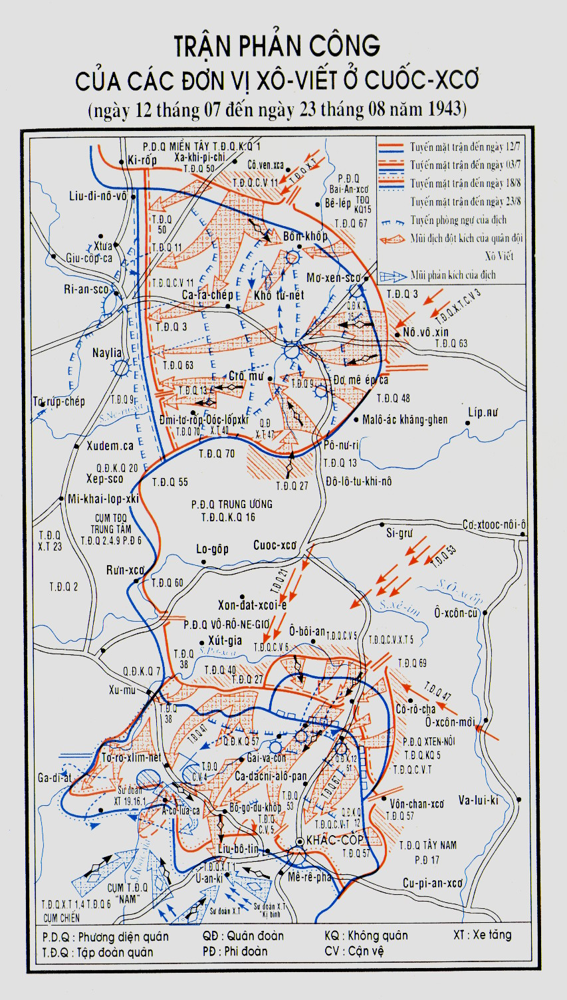

THẾ là Phương diện quân Vôn-khốp và Lê-nin-grát chọc thủng vòng vây Lê-nin-grát đã trở thành sự kiện lớn nhất trong chiến cục mùa đông 1942-1943, một sự kiện có ý nghĩa quốc tế to tát. Phương diện quân Tây-bắc, sau khi đánh tan quân giặc ở Đê-mi-an-xcơ, đã tiến tới sông Lô-vát. Phương diện quân miền Tây đã đuổi địch khỏi khu Rơ-giép - Vi-a-dơ-ma, chiếm lại tuyến Đu-khốp-si-na - Đê-men-xcơ.
Đến giữa tháng 3-1943, tình hình trên tất cả các mặt trận đều chuyển biến có lợi về phía Liên Xô. Sau khi các đơn vị quân Đức, Ru-ma-ni, Ý và Hung-ga-ri trong khu sông Vôn-ga, sông Đông, Tây Cáp-ca-dơ bị tiêu diệt thì sự thiệt hại của địch đã lên đến mức rất cao, vì vậy vào khoảng giữa tháng 3, chúng phải rút về tuyến Xép-xcơ - Rưn-xcơ - Xu-mư - A-khơ-tưa-ca - Cra-xnô-grát - Xla-vi-an-xcơ - Li-xư-chan-xcơ - Ta-gan-rốc.
Từ khi chuyển sang phản công ở Xta-lin-grát (tháng 11-1942 đến tháng 3-1943), Quân đội Xô-viết đã tiêu diệt tổng cộng trên 100 sư đoàn giặc. Tất nhiên đối với các chiến sĩ và nhân dân Xô-viết, đạt được những thắng lợi to lớn đó không phải dễ dàng gì, chúng ta cũng tổn thất nhiều.
Trên các mặt trận đã tạm yên tiếng súng, riêng ở các khu vực thuộc Phương diện quân Vô-rô-ne-giơ, Tây-nam, Nam và ở Cu-ban thì vẫn có những trận chiến đấu ác liệt.
Để không cho tình hình ở cánh phía nam của chúng tiếp tục xấu thêm, bộ tổng tư lệnh Đức đã thu nhập lực lượng bổ sung để phản công lại Phương diện quân Tây-nam. Mục tiêu là đẩy các đơn vị của ta sang bên kia sông Bắc Đô-nét và sau khi tổ chức phòng ngự dọc con sông để làm chỗ dựa, chúng sẽ tiến công các đơn vị quân ta thuộc Phương diện quân Vô-rô-ne-giơ, đánh chiếm Khác-cốp và Ben-gô-rốt.
Về sau qua các tài liệu thu được, chúng ta biết bọn chỉ huy Đức dự định, khi có điều kiện thuận lợi, sẽ mở rộng các hoạt động của quân đội chúng nhằm thủ tiêu khoảng trận địa phòng ngự nhô ra của chúng ta ở Cuốc-xcơ.
Đầu tháng 3, quân địch từ khu Liu-bô-tin đã phản kích mạnh vào cánh trái Phương diện quân Vô-rô-ne-giơ; bị thiệt hại, quân ta rút lui. Ngày 16-3, địch lại chiếm Khác-cốp và bắt đầu phát triển tiến công về phía Ben-gô-rốt.
Lúc đó, tôi đang ở Phương diện quân Tây-bắc do nguyên soái Liên Xô Ti-mô-sen-cô chỉ huy. Các đơn vị thuộc Phương diện quân này đã tới sông Lô-vát và chuẩn bị vượt sông.
Sau khi thông báo lên Tổng tư lệnh tối cao về tình hình trên sông Lô-vát, tôi báo cáo rằng, việc tan băng sớm chưa từng có đã gây khó khăn cho việc vượt sông, vì vậy Phương diện quân Tây-bắc đành phải tạm thời đình chỉ cuộc tiến công ở đây.
Tổng tư lệnh đồng ý như vậy. Sau khi hỏi tôi đôi câu về khả năng phát triển của tình hình ở Phương diện quân Tây-bắc, khi kết thúc cuộc nói chuyện, I.V. Xta-lin cho biết định giao việc chỉ huy Phương diện quân Tây-bắc cho V.Đ. Xô-cô-lốp-xki.
Tôi đề nghị cử I.X. Cô-nép, đang làm tư lệnh Phương diện quân miền Tây đến chỉ huy Phương diện quân Tây-bắc và cử X.K. Ti-mô-sen-cô xuống phía nam làm đại diện Đại bản doanh giúp đỡ các Phương diện quân Nam và Tây-nam. Đồng chí Ti-mô-sen-cô là người am hiểu địa phương và gần đây, tình hình các nơi đó đã phát triển không thuận lợi cho chúng ta.
- Được rồi - I.V. Xta-lin nói - tôi sẽ nói với Pô-xcrê-bư-sép báo cho Cô-nép gọi điện tới đồng chí để có điều gì cần thì dặn dò, còn đồng chí thì sáng mai phải về Đại bản doanh. Cần bàn về tình hình các Phương diện quân Tây-nam và Vô-rô-ne-giơ.
- Có thể, - Xta-lin nói thêm, - cần đồng chí đi Khác-cốp đấy.
Một lát sau, I.X. Cô-nép gọi dây nói đến tôi.
- Có gì thế, I-van Xtê-pa-nô-vích.
- Hội đồng quốc phòng đã cho tôi thôi chức chỉ huy Phương diện quân miền Tây. V.Đ. Xô-cô-lốp-xki được cử thay.
- Tổng tư lệnh tối cao đã cử đồng chí làm tư lệnh Phương diện quân Tây-bắc thay X.K. Ti-mô-sen-cô. X.K. Ti-mô-sen-cô được phái đến các mặt trận phía nam.
I.X. Cô-nép tỏ lời cảm ơn và nói rằng, sáng mai sẽ đến nhận nhiệm vụ mới. Sáng hôm sau, tôi về Đại bản doanh.
Khuya hôm đó, tôi tới Mát-xcơ-va. Đi đường rất mệt vì phải dùng loại xe đi trên mọi địa hình mới có thể vượt qua những con đường đã bị băm nát.
A.N. Pô-xcrê-bư-sép báo cho tôi biết, I.V. Xta-lin đã triệu tập rất nhiều người đến để bàn cách giải quyết nhiên liệu cho ngành luyện kim, điện lực, các nhà máy chế tạo máy bay và xe tăng. Tôi được lệnh đến hội nghị ngay. Vừa đi vừa ăn qua loa, tôi tới viện Crem-lanh.
Trong phòng làm việc của Tổng tư lệnh tối cao, ngoài các ủy viên Bộ chính trị, có cả cán bộ lãnh đạo các cơ quan Nhà nước, các công trình sư và giám đốc nhiều nhà máy lớn. Qua các báo cáo, mọi người thấy rõ đang có tình hình căng thẳng trong công nghiệp, kể cả ở các nhà máy quan trọng nhất như nhà máy sản xuất máy bay và đại bác. Sự viện trợ theo lối thuê mượn, hứa hẹn từ nước Mỹ thì được thực hiện một cách tồi tệ.
Lúc cuộc họp với đồng chí Tổng tư lệnh tối cao kết thúc thì đã hơn 3 giờ đêm. Ở hội nghị ra, người thì về trụ sở Ban chấp hành Trung ương, người thì về các cơ quan Bộ ủy viên nhân dân, người thì về ủy ban kế hoạch Nhà nước để tìm các nguồn lực lượng và để nhanh chóng thực hiện các biện pháp cải thiện sản xuất công nghiệp.
Sau hội nghị, I.V. Xta-lin lại gần tôi, hỏi:
- Đồng chí đã ăn sáng chưa?
- Thưa chưa.
- Thế thì đến nhà tôi và luôn tiện chúng ta nói chuyện về tình hình vùng Khác-cốp.
Trong khi ăn, Bộ Tổng tham mưu đưa bản đồ tình huống các Phương diện quân Tây-nam và Vô-rô-ne-giơ tới. Đồng chí thuyết minh bản đồ, khi nói về tình hình Phương diện quân Vô-rô-ne-giơ, báo cáo rằng, ở đây trong ngày 16 tình thế đã trở nên hết sức xấu.
Sau khi bộ đội thiết giáp và cơ giới địch tiến công từ vùng Cra-ma-toóc-xcơ đã đẩy Phương diện quân Tây-nam sang bên này sông Đô-nét, tình hình phía tây nam Khác-cốp cũng trở nên nghiêm trọng.
Quân địch từ Pôn-ta-va và từ Cra-xnô-grát đều chuyển cùng một lúc sang tiến công. N.Ph. Va-tu-tin đã kịp kéo các đơn vị vượt lên phía trước của tập đoàn quân xe tăng 3 và tập đoàn quân 69 đã tổ chức được đội hình chiến đấu nghiêm mật ở phía tây và tây nam Khác-cốp. Phương diện quân Vô-rô-ne-giơ đã không làm được như thế.
- Tại sao Bộ Tổng tham mưu không nhắc việc đó? - Tổng tư lệnh tối cao hỏi.
- Chúng tôi đã nêu ý kiến đó với họ. - đồng chí sĩ quan trả lời.
- Bộ Tổng tham mưu cần đi sâu, can thiệp vào công tác lãnh đạo của phương diện quân. - I.V. Xta-lin đề ra ý kiến một cách kiên quyết. Và sau đó, suy nghĩ một lát nói với tôi - Sáng mai đồng chí cần ra mặt trận.
Ngay lúc đó, Tổng tư lệnh tối cao gọi dây nói cho ủy viên Hội đồng quân sự Phương diện quân Vô-rô-ne-giơ, N.X. Khơ-rút-xốp và khiển trách Khơ-rút-xốp vì Hội đồng quân sự đã không có biện pháp đánh lại các đòn phản công của địch.
Sau khi làm việc xong với người thuyết minh bản đồ, Tổng tư lệnh nói:
- Dù thế nào cũng phải ăn cho xong đã.
Lúc này đã là 5 giờ sáng.
Sau bữa ăn trưa, thật ra đã thành bữa ăn sáng, tôi xin phép đến Bộ ủy viên nhân dân quốc phòng để chuẩn bị ra mặt trận Vô-rô-ne-giơ. Lúc 7 giờ sáng tôi đã có mặt tại sân bay Trung ương để đáp máy bay tới Bộ tham mưu Phương diện quân Vô-rô-ne-giơ. Ngồi lên máy bay, tôi ngủ thiếp đi và chỉ tỉnh giấc khi máy bay hạ cánh, chạm mạnh vào mặt đất.
Ngay hôm đó, từ Bộ tham mưu Phương diện quân Vô-rô-ne-giơ, tôi gọi điện về tả lại tình hình với I.V. Xta-lin. Tình hình đã xấu hơn so với lúc người cán bộ thuyết minh bản đồ báo cáo buổi sáng. Sau khi chiếm được Khác-cốp, không gặp sự chống cự đặc biệt nào, quân địch đã thọc vào hướng Ben-gô-rốt và chiếm được Ca-da-chi-a Lô-pan.
Tôi báo cáo với Tổng tư lệnh: “Cần đưa ngay đến vùng này tất cả lực lượng có thể có của Bộ hoặc có thể rút từ các Phương diện quân bên cạnh; trong trường hợp trái lại bọn Đức sẽ chiếm được Ben-gô-rốt và mở rộng cuộc tiến công về phía Cuốc-xcơ”.
Một giờ sau, qua cuộc nói chuyện với A.M. Va-xi-lép-xki, tôi được biết Tổng tư lệnh tối cao đã ra lệnh đưa đến vùng Ben-gô-rốt tập đoàn quân 21, tập đoàn quân xe tăng 1 và tập đoàn quân 64. Tập đoàn quân xe tăng được dùng làm lực lượng dự bị của tôi.
Ngày 18-3, Ben-gô-rốt bị quân đoàn xe tăng SS chiếm. Nhưng địch không thể tiến thêm được lên phía bắc.
Qua báo cáo của tư lệnh sư đoàn cận vệ, tướng Ne-xto Đmi-tơ-ri-ê-vích Cô-din, tôi được biết tình hình sau đây:
Theo lệnh của tướng I.M. Chi-xti-a-cốp, tư lệnh tập đoàn quân 21, chi đội phái đi trước do trung tá G.G. Pan-tiu-khốp, trung đoàn trưởng trung đoàn cận vệ 155, chỉ huy đã tới Ben-gô-rốt để tiếp xúc với địch và bắt tù binh.
Trên đường tới Ben-gô-rốt, khi phát hiện thấy địch, chi đội đã phục kích trong vùng Sa-pi-nô (phía bắc Ben-gô-rốt) và bắt được tù binh thuộc sư đoàn xe tăng “đầu lâu”. Qua hỏi cung chúng ta được biết, quân địch tiến về Ô-bôi-an.
Chiều ngày 18-3, chủ lực của sư đoàn 52 vào chiếm lĩnh trận địa phòng ngự ở phía bắc Ben-gô-rốt và đưa các đội tiền tiêu lên phía trước. Từ đó về sau, quân địch nhiều lần cố sức đánh bật các chiến sĩ cận vệ nhưng đều không đạt kết quả. Bên phải sư đoàn 52 có sư đoàn bộ binh cận vệ 67 phòng ngự và bên trái có sư đoàn bộ binh 375.
Theo báo cáo của sư trưởng sư đoàn 52, nổi nhất trong các trận chiến đấu ở phía bắc Ben-gô-rốt là trung đoàn trưởng trung đoàn 153, trung tá P.X. Ba-bích, chủ nhiệm chính trị sư đoàn trung tá I.X. Vô-rô-nốp, trung đoàn trưởng trung đoàn bộ binh 151, trung tá I.Ph. Yu-đích. Ngày 20-3, tôi đã tặng thưởng huy chương, huân chương chiến đấu cho nhiều chiến sĩ.
Ngày 20, 21-3, lực lượng cơ bản của tập đoàn quân 21 đã tổ chức phòng ngự khá vững chắc ở phía bắc Ben-gô-rốt, còn tập đoàn quân xe tăng 1 tập kết ở phía bắc Ô-bôi-an.
Cuối tháng 3, bọn Đức phát xít đã nhiều lần định đột phá phòng ngự của tập đoàn quân 64 ở Ben-gô-rốt và bắc Đô-nét, nhưng mọi âm mưu đó đều không thực hiện được. Bị đánh thiệt hại nặng, địch phải trụ lại trên tuyến đã chiếm.
Từ lúc đó, tình hình trong vùng cánh cung Cuốc-xcơ đã tạm ổn. Cả hai bên đang chuẩn bị cho một cuộc giáp chiến quyết định.
Để kiện toàn cơ quan lãnh đạo của Phương diện quân Vô-rô-ne-giơ, Tổng tư lệnh tối cao cử thượng tướng N.Ph. Va-tu-tin làm tư lệnh. Sau khi nhận chức, với lòng kiên nghị sẵn có, N.Ph. Va-tu-tin bắt tay ngay vào việc củng cố bộ đội và xây dựng thế trận phòng ngự có chiều sâu và nhiều tầng.
Cuối tháng 3 và đầu tháng 4, chúng tôi đã nhiều lần cùng với N.Ph. Va-tu-tin đến thăm tất cả các khu vực của phương diện quân. Chúng tôi đã cùng cán bộ chỉ huy các bộ đội và binh đoàn đánh giá tình hình, xác định nhiệm vụ và các biện pháp cần áp dụng nếu quân địch chuyển sang tiến công. Tôi đặc biệt lo ngại về đoạn phòng ngự của sư đoàn khinh binh cận vệ 52 mà tôi đã hai lần tới quan sát. Đồng chí tư lệnh phương diện quân và tập đoàn quân đều cùng ý kiến và chúng tôi quyết định tìm mọi cách lấy pháo binh để tăng cường và củng cố khu vực có trách nhiệm nặng nề đó.
Đã đến lúc chuẩn bị những dự kiến bước đầu về kế hoạch trận chiến đấu lớn ở Cuốc-xcơ.
Theo sự thỏa thuận với Tổng tham mưu trưởng A.M. Va-xi-lép-xki và tư lệnh các phương diện quân, chúng tôi đã dùng nhiều cách tổ chức trinh sát tỉ mỉ tình hình địch trên các khu vực của các Phương diện quân Trung ương, Vô-rô-ne-giơ và Tây-nam. A.M. Va-xi-lép xki đã giao cho cục quân báo, bộ tham mưu trung ương quân du kích nhiệm vụ xác định số lượng và nơi đóng quân của các đội dự bị địch, tiến trình điều động và tập trung các đơn vị địch rút từ Pháp, Đức và các nước khác tới.
Hoạt động của lực lượng du kích từ bên trong vùng địch chiếm, do các tổ chức bí mật của Đảng ở địa phương chỉ đạo thường xuyên và không mệt mỏi, đã làm tăng sức mạnh nói chung của các đòn đánh vào quân địch. Sự hiệp đồng giữa quân du kích và bộ đội chủ lực đã chặt chẽ hơn, du kích đã cung cấp tin địch cho chủ lực, phá hoại các lực lượng dự bị địch, cắt đứt giao thông, làm gián đoạn việc điều động quân đội và vũ khí của chúng.
Ngay từ năm 1942, Hít-le đã phải dùng 10 % lực lượng lục quân có trên mặt trận Xô - Đức để đối phó với quân du kích. Năm 1943, để làm nhiệm vụ đó, địch đã dùng đến các binh đoàn cảnh sát SS và SD, nửa triệu lính thuộc các đơn vị bổ trợ, khoảng 25 sư đoàn quân chính quy.
Đảng Cộng sản đã khéo lãnh đạo cuộc đấu tranh yêu nước của nhân dân chống lại bọn xâm lược nước ngoài và bằng cách đó, đã giúp đỡ tích cực bộ đội đang tác chiến. Những người đảng viên du kích không những cầm súng chiến đấu mà còn làm công tác tuyên truyền giải thích rất rộng trong nhân dân, phân phát các truyền đơn lời kêu gọi, bản tin của phòng thông tin Xô-viết, đập tan các luận điệu tuyên truyền lừa bịp của giặc. Quân du kích cũng tác động rất lớn đến tinh thần quân địch.
Các đơn vị ở mặt trận trong phạm vi hoạt động của mình bắt đầu xúc tiến công việc trinh sát đường không và trên mặt đất. Kết quả là đến đầu tháng 4, chúng tôi đã có khá đầy đủ tin tức về tình hình quân địch trong vùng Ô-ri-ôn, Xu-mư, Ben-gô-rốt và Khác-cốp. Sau khi tìm hiểu các tin trinh sát, nghiên cứu các nguồn tư liệu lấy từ nhiều địa bàn hoạt động quân sự trên phạm vi rộng hơn và sau khi thảo luận với tư lệnh các Phương diện quân Vô-rô-ne-giơ và Trung ương, sau đó cả với Tổng tham mưu trưởng A.M. Va-xi-lép-xki, tôi gửi lên Tổng tư lệnh bản báo cáo dưới đây:
“Gửi đồng chí Va-xi-li-ép,
5 giờ 30 ngày 8-4-1943,
Tôi xin báo cáo ý kiến của tôi về khả năng hoạt động của quân địch trong xuân hè 1943 và những dự kiến về nhiệm vụ chiến đấu phòng ngự của chúng ta trong thời gian sắp tới:
1. Bị thiệt hại lớn trong chiến cục mùa đông 1942 - 1943, quân địch chắc chắn sẽ không thể xây dựng được lực lượng dự bị lớn trong mùa xuân để mở lại cuộc tiến công đánh chiếm Cáp-ca-dơ và tiến tới sông Vôn-ga, thực hiện mục đích đánh vu hồi sâu vào Mát-xcơ-va.
Bị hạn chế về lực lượng dự bị, trong mùa xuân và nửa đầu mùa hè, muốn đạt được mục tiêu cơ bản: chiếm Mát-xcơ-va, quân địch bắt buộc sẽ phải mở những cuộc tiến công trên bề mặt hẹp và giải quyết nhiệm vụ từng bước một.
Hiện nay địch đã tập trung nhiều lực lượng ở phía trước các Phương diện quân Trung ương, Vô-rô-ne-giơ, Tây-nam, vì vậy tôi cho rằng chúng sẽ mở các chiến dịch tiến công chủ yếu vào ba phương diện quân nói trên với ý định đập tan lực lượng ta trên các hướng đó để mở rộng đường vận động đánh vu hồi Mát-xcơ-va theo hướng gần nhất.
2. Bước thứ nhất, địch sẽ tập trung một số lực lượng lớn nhất, trong đó có 13 - 15 sư đoàn xe tăng, và điều một số lớn máy bay làm lực lượng yểm hộ để đánh vu hồi Cuốc-xcơ từ hai phía: một, từ phía đông bắc, bằng những lực lượng định tập trung ở Ô-ri-ôn - Crô-mư; một, từ phía đông nam bằng số lượng địch ở Ben-gô-rốt - Khác-cốp. Để chia cắt mặt trận của ta, chúng có thể mở một mũi đột kích hỗ trợ nữa ở phía tây, từ vùng Vô-rô-giơ-bư, tức là giữa hai con sông Xê-im và Pơ-xen theo hướng tây nam đánh vào Cuốc-xcơ. Trong cuộc tiến công này địch sẽ cố gắng đánh tan và bao vây các tập đoàn quân 13, 70, 65, 38, 40 và 21. Mục tiêu cuối cùng của bước này có thể là tiến đến tuyến sông Cô-rô-cha - Cô-rô-cha - Tim – sông Tim - Đrô-xcô-vô.
3. Bước thứ hai, địch sẽ tìm cách tiến đến sườn và phía sau Phương diện quân Tây-nam theo hướng chung qua Va-lui-ki - U-ra-dô-vô.
Để hợp kích với mũi tiến công này, địch có thể mở một mũi từ vùng Li-xi-chan-xcơ hướng về phía bắc tới Xva-tô-vô - U-ra-dô-vô.
Trên các khu vực còn lại, địch sẽ cố tiến tới tuyến Líp-nư - Ca-xtoóc nôi-ê - Ô-xcôn mới và cũ.
4. Trong bước ba, sau khi đã tổ chức lại đội hình thích hợp, có thể địch sẽ âm mưu tiến tới tuyến Li-xki - Vô-rô-ne-giơ - Ê-lét và sau khi đã có lá chắn che chở ở phía đông nam, chúng có thể tổ chức đòn vu hồi Mát-xcơ-va từ đông nam qua Ra-nen-buốc - Ria-giơ-xcơ - Ri-a-dan.
5. Có thể dự kiến, trong các cuộc tiến công, địch sẽ dựa chủ yếu vào các sư đoàn xe tăng và không quân, bởi vì khả năng tiến công của bộ binh chúng năm nay không bằng năm ngoái.
Giờ đây phía trước các Phương diện quân Trung ương và Vô-rô-ne-giơ, địch có đến 12 sư đoàn xe tăng và, sau khi kéo thêm 3 hoặc 4 sư đoàn xe tăng từ các khu vực khác đến, chúng có thể tung ra 15 16 sư đoàn xe tăng với 2.500 chiếc để đánh vào bộ phận quân ta ở Cuốc-xcơ
6. Để đập nát quân địch trước trận địa của ta, ngoài việc tăng cường tổ chức đánh xe tăng ở Phương diện quân Trung ương và Vô-rô-ne-giơ, chúng ta cần nhanh chóng lấy từ các khu vực chưa tác chiến để chuyển 30 trung đoàn pháo cơ động chống tăng về làm dự bị của Bộ Tổng tư lệnh trên các hướng bị uy hiếp; cần tập trung tất cả các trung đoàn pháo tự hành vào khu vực Líp-nư - Ca-xtoóc-nôi-ê - Ô-xcôn cũ. Cần tăng cường ngay cho Rô-cô-xốp-xki và Va-tu-tin một số trung đoàn và tập trung máy bay càng nhiều càng tốt vào đội dự bị của Bộ để có thể mở những trận tập kích mãnh liệt bằng không quân hiệp đồng với các binh đoàn xe tăng và bộ binh mà đập nát các đạo quân xung kích địch, phá kế hoạch tiến công của chúng.
Tôi không rõ tình hình bố trí gần đây của các đội dự bị chiến dịch, nhưng tôi muốn đề nghị đặt các đơn vị đó trong vùng Ê-phơ-rê-mốp - Líp-nư - Ca-xtoóc-nôi-ê - Ô-xcôn cũ - Va-lui-ki - Rốt-xốt - Li-xki - Vô-rô-ne-giơ - Ê-lét. Bộ phận chính của lực lượng dự bị nên đặt trong vùng Ê-lét - Vô-rô-ne-giơ. Các đơn vị dự bị dùng để thọc sâu nên đặt trong vùng Ri-a-giơ-xcơ, Ra-nen-buốc, Mi-chu-rin-xcơ, Tam-bốp.
Trong vùng Tu-la - Xta-li-nô-goóc-xcơ cần có một tập đoàn quân.
Trong những ngày gần đây, không nên chuyển sang tiến công nhằm mục đích cảnh cáo quân địch. Tốt hơn cả là chúng ta hãy đánh tiêu hao quân địch trước trận địa phòng ngự của ta, tiêu diệt các xe tăng của chúng và sau đó, khi đưa được các lực lượng dự bị nguyên vẹn tới, chúng ta sẽ chuyển sang tổng tiến công để tiêu diệt hoàn toàn khối lực lượng cơ bản của địch.
Côn-xtan-ti-nốp
Số 256”.
Ngày 9 hoặc 10 tháng 4 - tôi không nhớ rõ - A.M. Va-xi-lép-xki đến bộ tham mưu Phương diện quân Vô-rô-ne-giơ. Cùng với đồng chí, tôi lại nêu từng chi tiết ra thảo luận về bản báo cáo của tôi về tình hình, dự kiến phân bố lực lượng dự bị chiến lược, chiến dịch và tính chất những hoạt động quân sự sắp tới. Giữa tôi và A.M. Va-xi-lép-xki có sự nhất trí trên tất cả các vấn đề.
Chúng tôi làm bản dự thảo chỉ thị phân bố lực lượng dự bị của Đại bản doanh và đề án thành lập Phương diện quân Xtép, ký tên vào và gửi lên Tổng tư lệnh tối cao phê chuẩn.
Trong văn kiện này, có dự kiến địa điểm bố trí các tập đoàn quân và nơi để các phương tiện tăng cường của các phương diện quân. Chúng tôi đề nghị triển khai cơ quan tư lệnh Phương diện quân Xtép ở Ô-xcôn mới, sở chỉ huy ở Cô-rô-cha và sở chỉ huy dự bị ở Vê-li-ki Buốc-lúc. Giống như mọi lần chuẩn bị các chiến dịch lớn trước đây chúng tôi yêu cầu các Bộ tư lệnh và Bộ tham mưu phương diện quân gửi về Bộ Tổng tham mưu những dự kiến và đề nghị về biện pháp tác chiến của mình.
Vì có những ý kiến sai lầm đối với công việc tổ chức phòng ngự và tiến công năm 1943 ở vùng Cuốc-xcơ, tôi cần đưa ra đây những tài liệu, văn kiện đã được gửi tới Đại bản doanh và Bộ Tổng tham mưu có liên quan đến việc đó. Ở đây tôi muốn nhấn mạnh rằng, Đại bản doanh không nhận được tài liệu nào khác, ngoài các văn kiện đó.
Đây là báo cáo ngày 10-4 của trung tướng M.X. Ma-li-nin, tham mưu trưởng Phương diện quân Trung ương, gửi theo yêu cầu của Bộ Tổng tham mưu.
“Phương diện quân Trung ương ngày 10-4-1943
Gửi Cục trưởng Cục tác chiến Bộ Tổng tham mưu Hồng quân, thượng tướng An-tô-nốp.
Số 11990.
...[1]
4. Trong xuân hè 1943, mục tiêu và hướng tiến công chủ yếu có khả năng nhất của địch là:
a) Căn cứ vào lực lượng, phương tiện và điều chủ yếu là căn cứ vào kết quả các chiến dịch tiến công năm 1941-1942, có thể dự kiến rằng, trong mùa hè năm 1943 quân địch chỉ có thể tiến công trên hướng chiến dịch Cuốc-xcơ, Vô-rô-ne-giơ.
Trên các hướng khác địch chưa chắc đã có sức để tiến công.
Do thế chiến lược chưng đã hình thành như trên, hiện nay, quân địch sẽ cố bám chắc Crưm, Đôn-bát và U-crai-na. Để bảo đảm việc chiếm giữ đó, địch phải đưa ranh giới mặt trận lên tuyến Stê-rốp-ca - Xta-rô-ben-xcơ - Rô-ven-ki - Li-xki - Vô-rô-ne-giơ - Líp-nư - Nô-vô-xin. Để thực hiện nhiệm vụ đó, địch phải có ít nhất 60 sư đoàn được tăng cường đầy đủ về máy bay, xe tăng và pháo binh.
Địch có đủ khả năng tập trung số lượng quân và phương tiện trên hướng đó.
Vì vậy hướng chiến dịch Cuốc-xcơ và Vô-rô-ne-giơ là hướng quan trọng bậc nhất.
b) Xuất phát từ những phán đoán trên, cần chuẩn bị đối phó với hướng đánh của chủ lực địch cùng một lúc ở vòng trong và ngoài:
- Trên vòng trong, địch sẽ đánh từ Ô-ri-ôn qua Crô-mư vào Cuốc-xcơ và từ Ben-gô-rốt qua Ô-bôi-an vào Cuốc-xcơ.
- Trên vòng ngoài-từ Ô-ri-ôn qua Líp-nư vào Ca-xtoóc-nôi-ê và từ Ben-gô-rốt qua Ô-xcôn cũ vào Ca-xtoóc-nôi-ê.
c) Nếu chúng ta không có biện pháp chống âm mưu nói trên, thì các hoạt động của chúng theo các hướng đó có thể làm cho các đơn vị thuộc Phương diện quân Trung ương và Vô-rô-ne-giơ bị đánh tan tác địch sẽ chiếm được trục đường xe lửa Ô-ri-ôn - Cuốc-xcơ - Khác-cốp và tiến tới tuyến có lợi, bảo đảm chiếm đóng lâu dài Crưm, Đôn-bát và U-crai-na.
d) Quân địch sẽ bắt tay vào điều chỉnh và tập trung quân trên các hướng dự định tiến công, lập các dự trữ cần thiết, khi thời kỳ đường xấu và mùa nước lũ xuân chấm dứt.
Vì vậy vào khoảng nửa sau tháng 5-1943, địch có thể chuyển sang mở trận tiến công lớn có ý nghĩa quyết định.
5. Trong tình huống đó nên thực hiện các biện pháp sau:
a) Dùng lực lượng hợp nhất của các Phương diện quân miền Tây, Bri-an-xcơ, Trung ương tiêu diệt đạo quân địch ở Ô-ri-ôn, không cho chúng tiến công từ Ô-ri-ôn qua Líp-nư đến Ca-xtoóc-nôi-ê hòng chiếm trục đường sắt Mơ-xen-xcơ - Ô-ri-ôn - Cuốc-xcơ và không cho địch sử dụng mối đường sắt và đường bộ ở Bri-an-xcơ.
b) Muốn phá các cuộc tiến công của địch cần tăng cường cho Phương diện quân Trung ương và Bri-an-xcơ không quân, chủ yếu là không quân tiêm kích và bổ sung cho mỗi phương diện quân ít nhất 10 trung đoàn pháo chống tăng.
c) Để đạt mục đích đó, cũng nên có sẵn lực lượng dự bị mạnh của Bộ trong vùng Líp-nư - Ca-xtoóc-nôi-ê - Líp-xki - Vô-rô-ne-giơ - Ê-lét.
Tham mưu trưởng
Phương diện quân Trung ương
Trung tướng Ma-li-nin.
Số 420”.
Bộ tư lệnh Phương diện quân Vô-rô-ne-giơ cũng gửi dự kiến của mình về.
“Gửi Bộ Tổng tham mưu Hồng quân
Số 11990
12.4.1943.
Trước mặt Phương diện quân Vô-rô-ne-giơ hiện nay phát hiện thấy:
1. Bộ binh địch có 9 sư đoàn thuộc tuyến một (các sư đoàn 26, 68, 323, 75, 255, 57, 332, 167 và một sư đoàn chưa rõ số hiệu).
Chính diện của chúng là Cra-xnô Ốc-chi-a-brơ-xcôi-ê - Chéc-nét-mi-na lớn - Cra-xnô Pô-le - Ca-dát-xcôi-ê. Một sư đoàn chưa rõ số hiệu, theo lời khai của tù binh, đang tới vùng Xon-đát-xcôi-ê để thay phiên sư đoàn bộ binh 332.
Tin trên đang được kiểm tra lại. Theo những tin tức chưa được xác minh, thê đội 2 của địch có 6 sư đoàn bộ binh. Địa điểm trú quân của các sư đoàn đó chưa rõ và cũng đang cho kiểm tra các tin này.
Trong vùng Khác-cốp, tình báo điện đài phát hiện thấy có cơ quan tham mưu của sư đoàn Hung-ga-ri, sư đoàn này có thể được dùng ở hướng thứ yếu.
2. Xe tăng, hiện nay địch có 6 sư đoàn (“Đại Đức”, “A-đôn-phơ Hít-le”, “Đầu lâu”, “Ra-ích”, 6 và 11), trong đó có 3 sư đoàn (“Đại Đức”, 6 và 11) ở tuyến 2. Qua trinh sát điện đài, thấy cơ quan tham mưu của sư đoàn xe tăng 17 di chuyển từ A-lếch-xây-ép-xcôi-ê về Ta-sa-gốp-ca, có nghĩa là nó đã tiến về phía bắc. Với lực lượng có trong tay, địch có thể dưa thêm khoảng 3 sư đoàn xe tăng từ khu vực Phương diện quân Tây-nam đến vùng Bê-gô-rốt.
a. Như thế, có thể phán đoán rằng, ở phía Phương diện quân Vô-rô-ne-giơ địch có khả năng lập một lực lượng xung kích gồm đến 10 sư đoàn xe tăng và ít nhất 6 sư đoàn bộ binh, tất cả có chừng 1.500 xe tăng. Lực lượng này có thể được tập trung trong vùng Bô-ri-xốp-ca - Ben-gô-rốt - Mu-rôm - Ca-da-chi-a Lô-pan. Nó có thể được một lượng không quân mạnh gồm khoảng 500 máy bay ném bom và ít nhất 300 máy bay tiêm kích ủng hộ.
Âm mưu của địch là dùng nhiều mũi khép lại từ Ben-gô-rốt đánh vào phía đông bắc và từ Ô-ri-ôn đánh vào phía tây nam để bao vây các đơn vị quân ta ở phía tây giới tuyến Ben-gô-rốt - Cuốc-xcơ.
Tiếp sau, ở hướng đông nam, địch có thể đánh vào sườn và phía sau Phương diện quân Tây-nam để sau này chúng dễ bề hoạt động trên phía bắc.
Tuy vậy không loại trừ khả năng trong năm nay địch sẽ không tiến công về phía đông nam mà sẽ thực hiện một kế hoạch khác, ví dụ như, sau khi đánh các đòn khép lại từ Ben-gô-rốt và Ô-ri-ôn, địch sẽ tiến công về hướng đông bắc để đánh vu hồi vào Mát-xcơ-va.
Cần tính đến khả năng đó và chuẩn bị lực lượng dự bị cần thiết.
Như vậy, ở trước mặt Phương diện quân Vô-rô-ne-giơ điều có thể xảy ra hơn cả là trên hướng chính, địch sẽ dùng lực lượng chủ yếu từ vùng Bô-ri-xốp-ca - Ben-gô-rốt đánh về phía Ô-xcôn cũ và dùng một bộ phận lực lượng đánh Ô-bôi-an và Cuốc-xcơ. Các mũi phụ có thể là Vôn-chan-xcơ - Ô-xcôn cũ - Xút-gia - Ô-bôi-an - Cuốc-xcơ.
Hiện nay, địch chưa sẵn sàng đánh lớn. Cuộc tiến công của chúng không thể mở màn trước ngày 20-4 năm nay mà chắc chắn hơn cả là nó sẽ bắt đầu vào những ngày đầu tháng 5.
Tuy vậy các trận đánh lẻ tẻ có thể xảy ra bất kì lúc nào. Vì vậy đòi hỏi bộ đội ta phải luôn luôn cảnh giác, sẵn sàng chiến đấu cao.
Phê-đô-rốp, Ni-ki-tin, Phê-đô-tốp[2].
Số 55/k”.
Như vậy, cho đến trước ngày 8 đến 12 tháng 4, các phương thức hành động của quân ta trong mùa hè năm 1943 ở vùng cánh cung Cuốc-xcơ vẫn chưa được xác định.
Lúc đó, chưa ai nghĩ đến một cuộc tiến công từ vùng Cuốc-xcơ. Đúng vậy, không thể khác thế được, vì các lực lượng dự bị chiến lược của ta đang được xây dựng mà Phương diện quân Vô-rô-ne-giơ và Trung ương thì, sau khi tổn thất trong các trận trước, cần được bổ sung quân số, kỹ thuật và phương tiện vật chất.
Chính là để đáp ứng với tình hình đó mà Đại bản doanh mới ra lệnh cho các Bộ tư lệnh phương diện quân chuyển bộ đội sang phòng ngự.
Tôi được Bộ Tổng tư lệnh giao nhiệm vụ trực tiếp lãnh đạo và kiểm tra sự thực hiện các chỉ thị của Đại bản doanh ở Phương diện quân Trung ương và Vô-rô-ne-giơ.
Ngày 10-4, Tổng tư lệnh tối cao gọi dây nói tới Bô-rư-sê-vô ra lệnh cho tôi về Mát-xcơ-va ngày 11-4 để bàn kế hoạch chiến cục mùa hè 1943 và bàn riêng về cánh cung Cuốc-xcơ.
Khuya ngày 11-4, tôi tới Mát-xcơ-va. A. M Va-xi-lép-xki cho tôi biết, I.V. Xta-lin đã chỉ thị đến chiều 12 phải chuẩn bị xong bản đồ tình huống, phải tính toán xong các việc cần thiết và dựng được các phương án.
Cả ngày 12-4, tôi cùng với A. M Va-xi-lép-xki và đồng chí Tổng tham mưu phó A.I. An-tô-nốp chuẩn bị các tài liệu cần thiết để báo cáo với Tổng tư lệnh tối cao. Từ sáng sớm, cả ba chúng tôi đã ngồi vào bàn làm việc nhưng do hoàn toàn hiểu biết nhau, đến chiều, mọi nhiệm vụ đã hoàn thành. A.I. An-tô-tốp, ngoài những ưu điểm khác ra, còn nắm rất vững kỹ thuật làm văn kiện. Trong khi tôi cùng với A.M. Va-xi-lép-xki đang dự thảo bản báo cáo lên I.V. Xta-lin, thì đồng chí đã chuẩn bị xong bản đồ tình huống và bản đồ kế hoạch hành động của các phương diện quân trong vùng cánh cung Cuốc-xcơ.
Tất cả chúng tôi cho rằng, xuất phát từ những phán đoán tình hình chính trị, kinh tế và chiến lược quân sự, bọn Hít-le sẽ cố gắng bằng mọi giá trụ lại trên tuyến mặt trận từ Vịnh Phần Lan đến bể A-dốp. Chúng có thể trang bị đầy đủ cho các đơn vị của chúng trên một trong các hướng chiến lược và chuẩn bị một chiến dịch tiến công rất lớn trong vùng đất nhô ở Cuốc-xcơ với ý định tiêu diệt ở đó quân của các Phương diện quân Trung ương và Vô-rô-ne-giơ. Nếu thực hiện được ý định đó thì thế chiến lược chung có thể sẽ biến đổi có lợi cho chúng, đó là còn chưa nói rằng, trong điều kiện đó, chính diện mặt trận chung sẽ thu hẹp lại và độ dày đặc về chiến dịch trong phòng ngự của quân Đức sẽ tăng lên.
Trong vùng này, tình hình cho phép địch dùng hai đòn hợp kích để đánh vào Cuốc-xcơ: một từ vùng phía nam Ô-ri-ôn, một từ Ben-gô-rốt. Chúng tôi phán đoán rằng, trên các khu vực khác, bộ chỉ huy Đức sẽ phòng ngự, bởi vì ở đó theo sự tính toán của ta, chúng không đủ lực lượng.
Chiều tối ngày 12-4, tôi cùng với A.M. Va-xi-lép-xki và A.I. An-tô-nốp đi xe đến Đại bản doanh.
Cũng như mọi lần, Tổng tư lệnh tối cao chăm chú nghe các báo cáo dự kiến của chúng tôi. Tổng tư lệnh tối cao đồng ý là nên tập trung những cố gắng chính vào vùng Cuốc-xcơ, nhưng vẫn lo cho hướng chiến lược Mát-xcơ-va.
Cuộc thảo luận ở Đại bản doanh hôm đó về kế hoạch tác chiến của quân ta đi đến kết luận là phải xây dựng phòng ngự vững chắc, có chiều sâu và nhiều tầng trên tất cả các hướng chính và trước nhất là trong vùng cánh cung Cuốc-xcơ. Các tư lệnh phương diện quân đã nhận được những chỉ thị cần thiết cho việc đó. Bộ đội bắt đầu làm công sự sâu xuống dưới đất, các lực lượng dự bị chiến lược đang xây dựng và huấn luyện, Đại bản doanh lúc này có quyết định chưa đem ra sử dụng mà được lệnh tập trung gần những vùng bị uy hiếp nhất.
Như vậy là ngay từ giữa tháng 4, Đại bản doanh đã có quyết định sơ bộ về trận phòng ngự có chuẩn bị sẵn. Đúng thế, chúng tôi đã nhiều lần bàn tới vấn đề này, còn quyết định cuối cùng thì do Bộ Tổng tư lệnh thông qua vào cuối tháng 5 đầu tháng 6 năm 1943. Trong thời gian đó thực tế là chúng tôi đã biết tất cả các chi tiết của âm mưu địch. Chúng định huy động những đạo quân xe tăng cần thiết và sử dụng các loại xe tăng “cọp” mới, các pháo tự hành “Phéc-đi-năng” để mở một trận tiến công rất lớn vào các Phương diện quân Vô-rô-ne-giơ và Trung ương.
Đại bản doanh coi các Phương diện quân Vô-rô-ne-giơ, Trung ương, Tây-nam và Bri-an-xcơ là lực lượng tác chiến chủ yếu trong giai đoạn đầu của chiến cục hè. Theo sự tính toán của chúng tôi, đây là nơi diễn ra các sự kiện chính. Chúng tôi muốn đánh lại cuộc tiến công của quân Đức bằng những phương tiện phòng ngự rất mạnh, giết thật nhiều địch và sau đó chuyển sang phản công, tiêu diệt chúng hoàn toàn. Vì vậy cùng với kế hoạch phòng ngự có chuẩn bị trước, đã quyết định lập kế hoạch tiến công quân địch, và nếu chúng lùi thời điểm tiến công lại, thì chúng ta tiến công trước.
Như vậy, phòng ngự của quân ta, không còn bàn cãi gì nữa, không phải là bị động, mà rõ ràng là có chuẩn bị trước, còn thời cơ chuyển sang tiến công thì Đại bản doanh cho rằng nó phụ thuộc vào tình hình cụ thể. Biết rằng, không nên hấp tấp nhưng cũng không được dề dà.
Lúc đó các khu vực tập trung lực lượng dự bị cơ bản cũng đã được ổn định. Chúng tôi chủ trương triển khai nó ở vùng Líp-nư - Ô-xcôn cũ - Cô-rô-cha để chuẩn bị tuyến phòng ngự trong trường hợp quân địch lọt được vào vùng cánh cung Cuốc-xcơ. Lực lượng dự bị còn lại được quyết định đặt ở bên sườn phải Phương diện quân Bri-an-xcơ trong vùng Ca-lu-ga - Tu-la - Ê-phơ-rê-mốp. Nơi tiếp giáp giữa các Phương diện quân Vô-rô-ne-giơ và Tây-nam trong vùng Li-xca được chuẩn bị làm địa điểm cho quân đoàn xe tăng cận vệ 5 và các binh đoàn dự bị khác của Bộ bước vào chiến đấu.
A.M. Va-xi-lép-xki và A.I. An-tô-nốp nhận lệnh bắt tay vào làm các văn kiện theo kế hoạch đã thông qua để đến đầu tháng 5 thảo luận lại một lần nữa.
Ngày 18-4, tôi được cử đáp máy bay đến Phương diện quân Bắc Cáp-ca-dơ. Các đơn vị thuộc phương diện quân đang chiến đấu ác liệt nhằm tiêu diệt đạo quân địch ở Ta-man. Ở đây địch có tập đoàn quân 17 được trang bị mạnh làm lực lượng nòng cốt.
Đối với Bộ tư lệnh Xô-viết, việc thủ tiêu quân địch ở bán đảo Ta-man có ý nghĩa đặc biệt. Chúng ta không những đập tan được một đạo quân địch rất lớn - trong vùng này chúng có 14 - 16 sư đoàn với quân số khoảng 18 - 20 vạn tên - mà còn giải phóng được Nô-vô-rốt-xi-xcơ. Bán đảo là một địa bàn không rộng lắm. Từ nửa đầu tháng Giêng, các chiến sĩ tập đoàn quân 18 và hải quân thuộc Hạm đội Biển Đen đã chiến đấu với địch ở đây.
Cùng với ủy viên nhân dân Hải quân N.G. Cu-dơ-nét-xốp, tư lệnh không quân A.A. Nô-vi-cốp và nhân viên Bộ Tổng tham mưu, tướng X.M. Stê-men-cô, chúng tôi đến tập đoàn quân 18 của tướng K.N. Lê-xê-lít-dê.
Sau khi tìm hiểu tình hình, lực lượng và phương tiện của tập đoàn quân và Hạm đội biển Đen, tất cả chúng tôi đều đi đến kết luận, trong lúc này không có cách gì mở rộng địa bàn Nô-vô-rốt-xi-xcơ mà lúc đó đã được các đơn vị gọi là “Quả đất nhỏ”.
Thật ra, địa bàn này chỉ có diện tích tất cả là 30 km vuông. Điều làm cho tất cả chúng tôi lo lắng lúc đó là, liệu các chiến sĩ Xô-viết bảo vệ địa bàn có thể chịu đựng được hay không những thử thách của một cuộc chiến đấu chênh lệch về lực lượng, trong đó ngày đêm họ bị máy bay và pháo binh địch bắn phá.
Chúng tôi muốn hỏi ý kiến đồng chí chủ nhiệm chính trị tập đoàn quân 18 L.I. Brê-giơ-nép về điều đó, nhưng chính đồng chí lại đang ở trên quả đất nhỏ, nơi đang diễn ra các trận chiến đấu ác liệt
Qua lời kể lại của tư lệnh tập đoàn quân K.N. Lê-xê-lít-dê, chúng tôi thấy rõ các chiến sĩ ta có đầy đủ quyết tâm chiến đấu đến cùng để tiêu diệt địch, không cho chúng hất mình xuống biển.
Sau khi báo cáo ý kiến đó lên I.V. Xta-lin, chúng tôi cùng với X.M. Stê-men-cô đến tập đoàn quân 56 thuộc Phương diện quân Bắc Cáp-ca-dơ. Lúc đó tướng An-đrây An-tô-nô-vích Grét-scô chỉ huy tập đoàn quân này.
Bấy giờ kế hoạch của cuộc tiến công đã đặt xong, nhưng bộ tư lệnh tập đoàn quân cho rằng, nó chưa được chuẩn bị đủ.
Chúng tôi liền quyết định hoãn trận đánh lại, đưa thêm đạn và pháo binh từ các khu ít hoạt động của phương diện quân tới, huy động tất cả lực lượng không quân có thể có, tìm cách sử dụng tốt hơn nữa sư đoàn của Bộ ủy viên nhân dân nội vụ thuộc lực lượng dự bị của Đại bản doanh.
Cùng lúc đó, chúng tôi cũng đến làm việc với tập đoàn quân 18. Chúng tôi thấy để yểm hộ đội đổ bộ của tập đoàn quân ở Mứt-xa-cô, nhất thiết cần cho hải quân và máy bay bắn phá bọn địch đang phòng ngự ở phía trước các chiến sĩ đổ bộ anh hùng đó.
Tập đoàn quân 56 đã chiến đấu rất xuất sắc để giải phóng Cu-ban. Lúc này nó lại nhận nhiệm vụ đập tan phòng ngự của quân địch thuộc tập đoàn quân 17 trong vùng làng Crưm, tiến vào sau lưng bọn địch ở Nô-vô-rốt-xi-xcơ. Tiếp theo đó toàn bộ lực lượng của phương diện quân sẽ tập trung lại để thủ tiêu địa bàn quân địch ở Ta-man.
Nhiệm vụ tiêu diệt địch trên các ngả đường vào làng Crưm và chiếm làng đó được giao cho một mình tập đoàn quân 56. Quân số của tập đoàn quân bị hạn chế nhiều mà cả Đại bản doanh và phương diện quân đều không có khả năng bổ sung.
Trận địa phòng ngự của địch, mà tập đoàn quân có nhiệm vụ vượt qua trên các ngả đường vào làng rất là kiên cố. Kế hoạch và công tác chuẩn bị chiến dịch được tiến hành dưới sự chỉ huy của A. Grét-scô, một tư lệnh nắm công việc rất chắc và biết nhìn xa.
Cuộc tiến công của tập đoàn quân 56 vào làng Crưm bắt đầu ngày 29-4. Tuy lực lượng có hạn, đặc biệt về không quân, xe tăng và pháo binh, nhưng bộ tư lệnh tập đoàn quân đã khéo tổ chức và chỉ huy do đó đã đập tan được sức chống cự ngoan cố của bọn giặc phòng ngự. Các đơn vị thuộc tập đoàn quân 56 đã chiếm làng, đầu mối đường sắt, hất quân địch ra ngoài Crưm. Tất cả các sự kiện đó đã được tả lại đầy đủ trong cuốn sách “Trận chiến đấu bảo vệ Cáp-ca-dơ” của nguyên soái Liên Xô A.A. Grét-scô.
Cuộc tiến công tiếp sau của tập đoàn quân 56 phải tạm ngừng vì không còn khả năng. Và Bộ Tổng tư lệnh bắt buộc phải hoãn toàn bộ cuộc tiến công của bộ đội Phương diện quân Bắc Cáp-ca-dơ trong vùng này đến một thời cơ thuận lợi hơn.
Mùa xuân năm 1943, để chuẩn bị cho Quân đội Xô-viết bước vào chiến cục mùa hè, Ban Chấp hành Trung ương Đảng, Hội đồng quốc phòng, Đại bản doanh và Bộ Tổng tham mưu đã triển khai một khối lượng việc rất đồ sộ. Đảng đã động viên đất nước ta quyết tâm đứng lên tiêu diệt quân xâm lược.
Những hoạt động tích cực đều khắp ngoài chiến trường đòi hỏi phải tiến hành hàng loạt biện pháp cải tiến tổ chức bộ đội và trang bị kỹ thuật mới. Trên Bộ Tổng tham mưu đã làm một số việc để đổi mới cơ cấu Hồng quân, đã nghiên cứu lại và kiện toàn hình thức tổ chức các phương diện quân và tập đoàn quân, tăng cường cho nó bộ đội pháo binh, cơ động chống tăng và súng cối. Quân đội thêm phương tiện liên lạc. Các sư đoàn bộ binh được trang bị súng máy tốt hơn, có thêm vũ khí chống tăng và được tổ chức ghép lại thành các quân đoàn nhằm cải tiến việc chỉ huy và làm cho các tập đoàn quân bộ đội hợp thành mạnh thêm.
Các sư đoàn mới pháo binh, súng cối và pháo phản lực được thành lập, với chất lượng trang bị tốt. Đã xây dựng các lữ đoàn, sư đoàn và quân đoàn pháo binh dự bị của Đại bản doanh để có lực lượng tạo nên những lưới lửa dày đặc trên các hướng chính mỗi khi cần hoàn thành những nhiệm vụ chủ yếu nhất. Từng sư đoàn cao xạ đã bắt đầu được giao cho các phương diện quân và các lực lượng phòng không. Sức mạnh của công cuộc phòng thủ đối không đã tăng lên nhiều.
Ban Chấp hành Trung ương Đảng và Hội đồng quốc phòng tập trung sự chú ý đặc biệt vào công việc sản xuất xe tăng và pháo tự hành.
Đến mùa hè năm 1943, ngoài những quân đoàn xe tăng và cơ giới độc lập chúng ta đã lập và trang bị đầy đủ cho 5 tập đoàn quân xe tăng theo tổ chức mới, mỗi đoàn, theo quy định, có 2 sư đoàn xe tăng và 1 sư đoàn cơ giới. Ngoài ra, để bảo đảm chọc thủng phòng ngự của địch và có lực lượng tăng cường cho các tập đoàn quân, đã xây dựng 18 trung đoàn xe tăng hạng nặng. Không quân cũng được tổ chức lại một cách tích cực, được trang bị các máy bay loại hoàn thiện như LA-5, YAK-9, PE-2, TU-2, IL-4 và v.v... Mùa hè, hầu hết không quân đã được trang bị lại bằng vật tư kỹ thuật mới; một loạt bộ đội không quân bổ sung, các phi đoàn dự bị của Đại bản doanh đã được thành lập, trong đó có 8 quân đoàn không quân hoạt động tầm xa.
Về số lượng, không quân ta đã hơn bọn Đức. Mỗi phương diện quân đều có tập đoàn quân không quân riêng gồm từ 700 đến 800 máy bay.
Phần lớn pháo được chuyển sang kéo bằng máy. Bộ đội công binh và thông tin liên lạc được trang bị ô-tô sản xuất trong nước và ô-tô “Xtu-đi-bây-cơ”. Hậu cần của các phương diện quân quan trọng nhất đã nhận được số lượng đáng kể ô-tô. Dưới quyền chỉ huy của Tổng cục hậu cần Hồng quân, có đến hàng chục tiểu đoàn và trung đoàn ô-tô mới, các đơn vị này đã nâng cao rõ rệt sức cơ động và khả năng của toàn bộ ngành hậu cần.
Chúng ta hết sức chú ý chuẩn bị nguồn dự trữ về người. Năm 1943, trong các trung tâm huấn luyện khác nhau, đã huấn luyện và bổ túc hàng chục vạn chiến sĩ, đã hình thành và kiện toàn những lực lượng dự bị chiến lược rất lớn. Đến ngày 1-7, trong lực lượng dự bị của Bộ Tổng tư lệnh đã có một. tập đoàn quân bộ đội hợp thành, 2 tập đoàn quân xe tăng và 1 tập đoàn quân không quân.
Vào mùa hè năm 1943, quân đội thường trực của ta có đến 6,4 triệu người, gần 9,9 vạn pháo và cối, khoảng 2.200 dàn pháo phản lực dã chiến, trên 9.500 xe tăng và pháo tự hành, gần 8.300 máy bay chiến đấu.
Khối công tác lớn lao mà Hội đồng quốc phòng và Đảng ta tiến hành để tăng cường và huấn luyện bổ sung cho các đơn vị Quân đội Xô-viết trên cơ sở các kinh nghiệm ở mặt trận đã nâng cao rõ rệt khả năng chiến đấu của bộ đội thuộc các phương diện quân đang chiến đấu.
Đảng Cộng sản rất chú ý nâng cao trình độ công tác Đảng, công tác chính trị trong quân đội. Quân đội được bổ sung hàng ngàn đảng viên cộng sản mới. Bằng sự hoạt động tích cực của mình, các đồng chí đảng viên sẽ còn nâng cao hơn nữa tinh thần chiến đấu của các chiến sĩ Quân đội Xô-viết anh hùng.
Năm 1943, trong các lực lượng vũ trang tính ra có 2,7 triệu đảng viên cộng sản và một số lượng tương tự chiến sĩ – đoàn viên thanh niên cộng sản.
Các cơ quan chính trị, các tổ chức Đảng và Đoàn đã hết sức cố gắng nâng cao phẩm chất đạo đức và trình độ giác ngộ chính trị của bộ đội. Để góp phần vào việc đó, chúng ta đã tổ chức lại các tổ chức Đảng trong quân đội theo nghị quyết của Ban Chấp hành Trung ương Đảng ngày 24-5-1943 “Về việc chỉnh đốn tổ chức Đảng và Đoàn trong Hồng quân và tăng cường vai trò của các báo của phương diện quân, tập đoàn quân và sư đoàn”.
Theo nghị quyết đó, các tổ chức Đảng được xây dựng không phải ở trung đoàn mà ở tiểu đoàn. Cơ cấu tổ chức Đảng như thế sẽ làm cho việc lãnh đạo của các đảng viên ở đơn vị dưới cụ thể hơn. Công tác Đảng, công tác chính trị do các cán bộ chỉ huy, cán bộ chính trị, các tổ chức Đảng và Đoàn tiến hành trên cơ sở nghị quyết Trung ương tháng Năm là một trong những điều kiện quan trọng nhất để tăng thêm sức chiến đấu của lực lượng vũ trang, trước khi bước vào thời kỳ sẽ diễn ra những trận chiến đấu lớn và ác liệt của chiến cục hè thu năm 1943.
Nói chung vào mùa hè năm 1943, trước cuộc chiến đấu ở Cuốc-cơ lực lượng vũ trang Xô-viết, về số lượng và chất lượng, đều hơn quân phát-xít Đức.
Bộ Tổng tư lệnh tối cao Xô-viết bây giờ đã có tất cả mọi phương tiện cần thiết có thể kiên quyết giữ vững quyền chủ động về chiến lược trên tất cả các hướng quan trọng nhất, có thể bắt quân giặc làm theo ý mình.
Quân giặc đã chuẩn bị một cuộc rửa hận cho trận thất bại ở Xta-lin-grát.
Các nhà lãnh đạo quân sự, chính trị của nước Đức Hít-le rút kinh nghiệm thấy rằng, lực lượng vũ trang của chúng đã mất ưu thế vốn có của chúng đối với Hồng quân, cho nên chúng đã dùng những biện pháp “tổng hợp” để đưa đến mặt trận Xô - Đức tất cả lực lượng có thể có.
Từ phía tây, chúng đã ném về đây một số lớn đơn vị bộ đội có khả năng chiến đấu nhất. Nền kỹ nghệ chiến tranh làm việc suốt 24 giờ trong một ngày, vội vã sản xuất các xe tăng “cọp” và “báo” mới và các pháo tự hành cỡ lớn “Phéc-đi-năng”. Không quân của chúng nhận được các loại máy bay mới “Phô-kê Vun-phơ-190A” và “Khên-kên-129”. Quân đội Đức đã được bổ sung một số lớn quân số và vật tư kỹ thuật.
Trên mặt trận Xô - Đức, địch có 232 sư đoàn Đức và đồng minh, gần 5,2 triệu người, trên 54.000 khẩu pháo và cối, 5.850 xe tăng và đại bác tiến công, khoảng 3.000 máy bay chiến đấu. Cơ quan tham mưu các cấp của chúng tích cực đặt kế hoạch cho các trận tiến công sắp tới.
Để mở chiến dịch đã dự định vào mỏm đất nhô Cuốc-xcơ, Bộ tư lệnh Đức tập trung 50 sư đoàn mạnh nhất, trong đó có 16 sư đoàn xe tăng và mô-tô hóa, đến 10.000 khẩu pháo và cối, 2.700 xe tăng và trên 2.000 máy bay (gần 60% tổng số máy bay chiến đấu ở phía đông). Chúng chuẩn bị ném 90 vạn quân vào cuộc chiến...
Bộ tư lệnh Đức tin là sẽ thắng. Bộ máy tuyên truyền phát-xít dùng đủ mọi cách để nâng cao tinh thần quân lính, hứa rằng trong chiến đấu tới, thắng lợi không còn phải bàn cãi gì nữa...
Bộ Tổng tư lệnh tối cao đứng trước một câu hỏi: tiến công hay phòng ngự?
Đầu tháng 5, tôi từ Phương diện quân Bắc Cáp-ca-dơ trở về Bộ. Lúc đó Bộ Tổng tham mưu về cơ bản đã thảo xong kế hoạch chiến cục mùa hè. Đại bản doanh đã tổ chức chu đáo việc trinh sát mặt đất và máy bay. Trinh sát đã xác định chắc chắn là các đơn vị và xe vận tải địch chủ yếu đổ về vùng Ô-ri-ôn, Crô-mư, Bri-an-xcơ, Khác-cốp, Cra-xnô-glát và Pôn-ta-va. Điều đó xác minh những phán đoán của chúng tôi trong tháng 4. Cả Đại bản doanh và Bộ Tổng tham mưu đều tin chắc rằng, quân đội Đức có thể chuyển sang tiến công trong những ngày gần đây.
Tổng tư lệnh tối cao ra lệnh báo trước cho các Phương diện quân Trung ương, Bri-an-xcơ, Vô-rô-ne-giơ và Tây-nam để cho các đơn vị sẵn sàng đánh trả cuộc tiến công đó. Dựa theo ý kiến của Tổng tư lệnh, đã thảo chỉ thị số 30123 của Bộ, trong đó phán đoán về khả năng tiến công của địch. Để phá cuộc tiến công đó, đã chuẩn bị một đòn phản chuẩn bị bằng máy bay và xe tăng.
Sau khi nhận được thông báo của Đại bản doanh, bộ tư lệnh các phương diện quân đã đề ra một loạt biện pháp nhằm tăng cường hệ thống hỏa lực phòng ngự, chống tăng và chướng ngại vật công binh.
Đây là một trong những báo cáo của Phương diện quân Trung ương về vấn đề đó:
“Gửi đồng chí Xta-lin I.V.
Đại bản doanh Bộ Tổng tư lệnh.
Tôi xin báo cáo về việc thực hiện chỉ thị số 30123 của Bộ tháng 5 năm nay:
1. Khi nhận được chỉ thị của Đại bản doanh, chúng tôi đã ra lệnh cho các tập đoàn quân và các quân đoàn độc lập thuộc Phương diện quân Trung ương chuyển vào tình trạng sẵn sàng chiến đấu từ sáng ngày 10-5.
2. Trong ngày 9 và 10 đã làm các việc sau:
a) Phổ biến cho bộ đội biết về khả năng địch mở trận tiến công trong những ngày gần nhất;
b) Bộ đội tuyến 1 và tuyến 2 chuyển sang hoàn toàn sẵn sàng chiến đấu. Bộ tư lệnh và cơ quan tham mưu kiểm tra tại chỗ tình hình sẵn sàng của bộ đội;
c) Trong dải phụ trách của các tập đoàn quân, đặc biệt trên hướng Ô-ri-ôn, tăng cường cho bộ đội hoạt động trinh sát và dùng hỏa lực để đánh địch. Các binh đoàn thuộc tuyến 1 tiến hành kiểm nghiệm hiệu lực của hiệp đồng hỏa lực. Bộ đội thuộc tuyến 2 và các đội dự bị đi trinh sát thực địa thêm trên các hướng có thể xảy ra tác chiến và xác định kế hoạch hiệp đồng với bộ đội tuyến 1. Bổ sung lượng dự trữ đạn dược cho các trận địa hỏa lực. Làm thêm vật chướng ngại, đặc biệt trên các hướng bị xe tăng uy hiếp. Đặt mìn trong trung tâm dải phòng ngự. Kiểm tra liên lạc kỹ thuật để có thể làm việc liên tục được.
3. Tập đoàn quân không quân 16 đã tích cực trinh sát đường không và theo dõi sát quân địch trong vùng Gla-du-nốp-ca - Ô-ri-ôn - Crô-mư - Cô-ma-ri-ki, các binh đoàn và bộ đội máy bay thuộc tập đoàn quân đã sẵn sàng đánh lui các đợt tập kích của máy bay địch và phá các cuộc tiến công địch có thể mở.
4. Để phá cuộc tiến công mà địch có thể mở trên hướng Ô-ri-ôn - Cuốc-xcơ, đã chuẩn bị trận đánh phản chuẩn bị bằng toàn bộ lực lượng pháo binh thuộc tập đoàn quân 13 và máy bay của tập đoàn quân không 16.
Rô-cô-xốp-xki, Tê-lê-ghin, Ma-li-nin”.
Những báo cáo do các mặt trận khác gửi về cũng tương tự.
Đại tướng N.Ph. Va-tu-tin nhìn tình hình có hơi khác một chút. Không phủ định các biện pháp phòng ngự, N.Ph. Va-tu-tin đề nghị Tổng tư lệnh tối cao mở trận tiến công phủ đầu vào cụm quân địch ở Ben-gô-rốt và Khác-cốp. N.X. Khơ-rút-xốp, ủy viên Hội đồng quân sự, ủng hộ hoàn toàn đề nghị đó.
Tổng tham mưu trưởng A.M. Va-xi-lép-xki, A.I. An-tô-nốp và các cán bộ khác của Bộ Tổng tham mưu không đồng ý với đề nghị đó của Hội đồng quân sự Phương diện quân Vô-rô-ne-giơ. Tôi hoàn toàn tán thành ý kiến của Bộ Tổng tham mưu, và đã báo cáo ý kiến đó với I.V. Xta-lin.
Tuy vậy Tổng tư lệnh tối cao cũng vẫn do dự: trước cuộc tiến công của địch, nên phòng ngự hay tiến công phủ đầu. I.V. Xta-lin lo quân ta không giữ vững được phòng ngự trước sức đột kích của địch, như đã xảy ra nhiều lần năm 1942 và 1943. Đồng thời cũng chưa tin bộ đội ta đủ sức tiêu diệt địch trong tiến công.
Sau nhiều lần thảo luận, cuối cùng vào khoảng giữa tháng 5-1943, I.V. Xta-lin đã hạ quyết tâm chống lại cuộc tiến công của bọn Đức bằng tất cả các loại hỏa lực của một thế trận phòng ngự sâu, có nhiều tầng, bằng những đòn mãnh liệt của máy bay và các đòn phản kích của lực lượng dự bị chiến dịch và chiến lược. Sau đó, khi quân địch đã bị mệt mỏi và chết nhiều, chúng ta sẽ tiêu diệt chúng bằng một trận phản công mạnh trên hướng Ben-gô-rốt - Khác-cốp và Ô-ri-ôn, kế theo là mở các chiến dịch phản công sâu ở tất cả các hướng quan trọng nhất.
Đại bản doanh dự kiến sau khi quân Đức bị đánh bại trong vùng cánh cung Cuốc-xcơ sẽ đề ra nhiệm vụ giải phóng Đôn-bát, cả vùng tả ngạn U-crai-na, thủ tiêu bàn đạp của địch trên bán đảo Ta-man, giải phóng miền Đông Bê-lô-ru-xi, tạo điều kiện tiến lên quét sạch địch ra khỏi bờ cõi nước ta.
Việc tiêu diệt lực lượng cơ bản của địch, Đại bản doanh định thực hiện theo phương thức dưới đây. Tranh thủ thời cơ, khi địch vừa tập trung xong chủ lực trên các khu xuất phát tiến công, dùng hỏa lực mãnh liệt của tất cả các loại pháo và cối, những trận tập kích của toàn bộ lực lượng không quân đập lên đầu chúng một đòn hỏa lực mãnh liệt. Tiếp tục cho không quân bắn phá trong suốt cuộc chiến đấu phòng ngự, lấy cả lực lượng máy bay của các phương diện quân bên cạnh và không quân tầm xa của Đại bản doanh.
Khi quân địch chuyển sang tiến công, Phương diện quân Vô-rô-ne-giơ và Trung ương phải ngoan cường giữ từng vị trí, từng tuyến chiến đấu bằng hỏa lực và các đòn phản kích từ phía sau ra. Để làm việc đó đã dự kiến đưa lực lượng dự bị từ hậu phương chiến dịch đến các khu vực bị uy hiếp, trong số lực lượng đó có cả các quân đoàn và tập đoàn quân xe tăng. Khi quân địch đã suy yếu và bị chặn lại thì ngay lập tức chuyển sang tiến công bằng lực lượng của các Phương diện quân Vô-rô-ne-giơ, Trung ương, Xtép, Bri-an-xcơ, cánh trái Phương diện quân miền Tây và cánh phải Phương diện quân Tây-nam.
Dựa theo quyết tâm đã thông qua, chỉ thị của Đại bản doanh đề ra các nhiệm vụ dưới đây:
Phương diện quân Trung ương phòng ngự ở phía bắc mỏm đất nhô Cuốc-xcơ, có nhiệm vụ tiêu hao và tiêu diệt thật nhiều địch, sau đó chuyển sang phản công hiệp đồng với Phương diện quân Bri-an-xcơ và Phương diện quân miền Tây, tiêu diệt cụm quân địch ở vùng Ô-ri-ôn.
Phương diện quân Vô-rô-ne-giơ giữ phía nam mỏm đất nhô Cuốc-xcơ cũng có nhiệm vụ tiêu hao và tiêu diệt địch, sau đó, phối hợp với Phương diện quân Xtép và cánh phải Phương diện quân Tây-nam chuyển sang phản công và hoàn thành việc tiêu diệt cụm quân Đức trong vùng Ben-gô-rốt, Khác-cốp. Cố gắng chủ yếu của Phương diện quân Vô-rô-ne-giơ tập trung ở cánh trái, trong khu vực các tập đoàn quân xe tăng cận vệ 6 và 7.
Phương diện quân Xtép nằm ở sau lưng Phương diện quân Vô-rô-ne-giơ và Trung ương trên tuyến Ít-man-cô-vô - Líp-nư - sông Cơ-sen - Be-lưi Cô-lô-đe-dơ, có nhiệm vụ chuẩn bị phòng ngự trên tuyến nói trên và bảo đảm chống lại quân địch khi chúng thọc qua Phương diện quân Trung ương và Vô-rô-ne-giơ lọt vào, đồng thời sẵn sàng chuyển sang tiến công.
Bộ đội phương diện quân Bri-an-xcơ và cánh trái Phương diện quân miền Tây có trách nhiệm cùng với Phương diện quân Trung ương phá cuộc tiến công của địch và cũng sẵn sàng chuyển sang tiến công trên hướng Ô-ri-ôn.
Bộ tham mưu trung ương phong trào du kích được giao nhiệm vụ tổ chức ở sau lưng giặc các vụ phá hoại trên tất cả các đường giao thông quan trọng của địch trong các tỉnh Ô-ri-ôn, Bri-an-xcơ, Khác-cốp v.v..., tổ chức việc thu lượm và báo cáo về Đại bản doanh các tin tức địch quan trọng nhất.
Để kìm giữ quân địch, không cho chúng cơ động lực lượng dự bị, đã dự kiến mở các chiến dịch bộ phận trên một loạt khu vực ở phía nam và tây bắc.
Thời gian chuẩn bị cho các trận đánh nói trên của các đơn vị Quân đội Xô-viết trong vùng Cuốc-xcơ là tháng 5 và tháng 6. Trong 2 tháng đó, tôi được phân công ở lại Phương diện quân Vô-rô-ne-giơ và Trung ương để tìm hiểu tình hình và theo dõi quá trình bộ đội chuẩn bị cho các hoạt động sắp tới.
Đây là một trong những báo cáo điển hình trong thời gian đó về Đại bản doanh:
“22.5.1943, 4 giờ 48
Gửi đồng chí I-va-nốp[3].
Báo cáo tình hình ngày 21-5-1943 ở Phương diện quân Trung ương:
1. Ngày 21-5, các nguồn trinh sát xác định: trên tuyến phòng ngự 1 của địch, đối diện với Phương diện quân Trung ương, địch có 15 sư đoàn bộ binh; ở tuyến 2 và đội dự bị, chúng có 13 sư đoàn, trong đó có 3 sư đoàn xe tăng.
Ngoài ra có tin quân địch tập trung ở phía nam Ô-ri-ôn 2 sư đoàn xe tăng và sư đoàn cơ giới 36. Tin này còn phải kiểm tra lại.
Sư đoàn xe tăng 4 địch trước nằm ở phía tây Xép-xcơ đã chuyển đến một nơi khác. Ngoài ra, trong vùng Bri-an-xcơ và Ca-ra-chép có 3 sư đoàn, trong đó có 2 sư đoàn xe tăng.
Như vậy, đến ngày 21-5, đối diện với Phương diện quân Trung ương, địch có 30 sư đoàn, trong đó có 6 sư đoàn xe tăng.
Trinh sát bằng khí tài và mắt của Phương diện quân phát hiện thấy 800 khẩu pháo, phần lớn cỡ 105 và 155 mm.
Khối lượng pháo chủ yếu, địch tập trung ở phía trước tập đoàn quân 13, cánh trái tập đoàn quân 48 và cánh phải tập đoàn quân 70, tức là trên đoạn Tơ-rô-xnô - Pô-dơ-đê-ê-vô I. Phía sau cụm pháo binh đó, trên tuyến Dơ-mê-ép-ca - Rừng Đỏ có 600 - 700 xe tăng. Khối lượng chính xe tăng tập trung ở phía đông sông Ô-ca.
Trong vùng Ô-ri-ôn, Bri-an-xcơ, Xmô-len-xcơ địch tập trung 600 - 650 máy bay. Bộ phận máy bay chủ lực, địch để ở vùng Ô-ri-ôn.
Trong những ngày gần đây, trên mặt đất cũng như trên trời, địch giữ thái độ thụ động, chỉ hạn chế trong việc trinh sát nhỏ trên không và những cuộc pháo kích thưa thớt.
Trên tiền duyên và trong tung thâm khu phòng ngự chiến thuật, địch làm công sự, đặc biệt chúng phát triển thêm trận địa phòng ngự phía trước tập đoàn quân 13 ở đoạn Cra-xnai-a Xlô-bô-da - Xen-cô-vô, ở đây đã xuất hiện tuyến phòng ngự thứ hai của địch nằm ở bên kia sông Ne-rút. Kết quả quan sát cho biết địch đang lập trên hướng đó tuyến phòng ngự thứ 3 ở phía bắc sông Ne-rút 3-4 km.
Tù binh khai, bộ chỉ huy Đức biết có quân ta tập trung ở nam Ô-ri-ôn, cũng biết ta đang chuẩn bị tiến công. Chúng đã thông báo về tình hình đó cho các đơn vị. Bọn giặc lái bị bắt thì cho biết, bộ tư lệnh Đức cũng đang chuẩn bị tiến công và chính vì thế mà không quân được điều đến.
Tôi đã đích thân tới tiền duyên tập đoàn quân 13 quan sát trận địa phòng ngự địch từ nhiều điểm, theo dõi các hành động của chúng, trao đổi ý kiến với các tư lệnh sư đoàn thuộc các tập đoàn quân 70 và 13, và các đồng chí Ga-la-nin, Pu-khốp và Rô-ma-nen-cô, tôi đi đến kết luận: trên tiền duyên không có dấu hiệu địch chuẩn bị trực tiếp cho cuộc tiến công.
Có thể là tôi sai, có thể là quân địch đã khéo ngụy trang mọi sự chuẩn bị tiến công, nhưng căn cứ vào tình hình bố trí các bộ đội xe tăng địch, số lượng các binh đoàn bộ binh chúng còn chưa đủ, tình trạng thiếu các cụm lớn pháo binh và cả sự phân tán của lực lượng dự bị địch, tôi cho rằng, đến cuối tháng 5 chúng chưa chuyển sang tiến công được.
2. Phòng ngự của các tập đoàn quân 13 và 70 của ta được tổ chức đúng đắn, có chiều sâu và chiều tầng. Phòng ngự của tập đoàn quân 48 còn lỏng lẻo, chưa đủ pháo binh, nếu địch đánh tập đoàn quân Rô-ma-nen-cô và có ý định vòng qua phía đông Ma-lô Ác-khan-ghen- cơ để đánh vu hồi quân chủ lực của Cô-xtin[4], thì Rô-ma-nen-cô sẽ không thể đứng vững được. Lực lượng dự bị của phương diện quân cũng nằm sau Pu-khốp và Ga-la-nin. Vì vậy không thể kịp viện trợ cho Rô-ma-nen-cô[5].
Tôi cho rằng, Rô-ma-nen-cô cần được tăng cường 2 sư đoàn bộ binh lấy từ lực lượng dự bị của Bộ, 3 trung đoàn xe tăng T-34, 2 trung đoàn pháo cơ động chống tăng và 2 trung đoàn súng cối hoặc pháo dự bị của Bộ. Nếu có được lực lượng đó cho Rô-ma-nen-cô, thì ở đó có thể tổ chức phòng ngự tốt và nếu cần chuyển sang tiến công, cũng là một mũi mạnh.
Trong bố phòng của Pu-khốp và Ga-la-nin và các tập đoàn quân khác thiếu sót chủ yếu là không có các trung đoàn pháo cơ động chống tăng. Tới ngày hôm nay phương diện quân có tới tất cả 4 trung đoàn loại đó, trong đó có hai trung đoàn phải nằm ở hậu phương vì không có xe kéo.
Vì các tiểu đoàn và trung đoàn không được trang bị đủ đại bác 45 ly, việc bố trí chống tăng trên các tuyến 1 và ở tiền duyên còn yếu.
Tôi cho rằng cần cho Cô-xtin càng nhanh càng tốt 4 trung đoàn pháo cơ động chống tăng (cộng với của Rô-ma-nen-cô nữa là 6), 3 trung đoàn pháo tự hành 152 ly.
3. Cô-xtin chưa làm xong công tác chuẩn bị tiến công. Nghiên cứu vấn đề đó trên địa hình với Cô-xtin và Pu-khốp, chúng tôi đi đến kết luận, cần xê dịch khu cửa mở quá phía tây 2 - 3 km so với chỗ dự định của Cô-xtin, nghĩa là đến tận Ác-khan-ghen-xcơ và bố trí thêm một quân đoàn tăng cường và một quân đoàn xe tăng cho thê đội 1 ở phía tây đường sắt.
Nếu chỉ có một cụm nhỏ pháo binh, Cô-xtin không thể đột phá theo kế hoạch đã định, bởi vì trên hướng đó, địch đã được tăng cường nhiều và đã xây dựng được nhiều tầng phòng ngự.
Muốn đột phá, thực ra, cần cho Cô-xtin một quân đoàn pháo binh nữa.
Phương diện quân có trung bình một cơ số rưỡi đạn dược.
Yêu cầu Ya-cốp-lép, trong thời gian 2 tuần lễ, cấp cho phương diện quân ba cơ số đạn các loại pháo cơ bản.
4. Pu-khốp hiện nay có 12 sư đoàn trong đó 6 sư đoàn nằm trong biên chế của 2 quân đoàn, còn 6 quân đoàn do Pu-khốp chỉ huy trực tiếp. Để thuận lợi cho công việc chỉ huy, yêu cầu ra lệnh nhanh chóng lập và giao cho Pu-khốp 2 cơ quan chỉ huy quân đoàn, cũng cần cho Ga-la-nin một cơ quan chỉ huy quân đoàn, vì hiện nay ở đó ngoài một quân đoàn bộ binh còn có 5 sư đoàn độc lập.
Đề nghị đồng chí cho biết ý kiến.
Yu-rép[6].
Số 2069”.
Theo thể thức như trên, chúng tôi nghiên cứu tình hình các đơn vị thuộc Phương diện quân Vô-rô-ne-giơ và cũng thông báo ngay lập tức về Đại bản doanh. Về phần mình, bộ tư lệnh và bộ tham mưu các phương diện quân, theo sát mỗi bước đi của quân địch, cũng tổng hợp tình hình và báo cáo nhanh chóng về Bộ Tổng tham mưu và Đại bản doanh.
Theo dõi công tác tham mưu của các đơn vị, các phương diện quân và trên Bộ, tôi phải nói rằng sự hoạt động không mệt mỏi đó đã giữ một vai trò quan trọng nhất trong các trận chiến đấu mùa hè. Nhân viên tham mưu đã bao nhiêu ngày đêm cần cù tập hợp và nghiên cứu tỉ mỉ các tin tức về quân địch, các khả năng và âm mưu của chúng. Các tài liệu tổng hợp lại, được báo cáo với các bộ tư lệnh để hạ quyết tâm.
Để phác ra kế hoạch hoạt động của quân ta trong khu vực mỏm đất nhô ở Cuốc-xcơ. Đại bản doanh và Bộ Tổng tham mưu đã tổ chức chu đáo công tác trinh sát để lấy tin tức về đội hình địch, về tình hình phân bố các binh đoàn thiết giáp, pháo binh của chúng, về các lực lượng không quân ném bom và tiêm kích của chúng và chủ yếu là làm thế nào lấy được tài liệu về ý đồ của bộ tư lệnh địch.
Phải biết rõ khối lượng công việc và phương pháp chuẩn bị một chiến dịch, mới có thể đánh giá được sự phức tạp và tính nhiều vẻ của công tác tham mưu và chỉ huy trong thời gian chuẩn bị cuộc chiến đấu ở Cuốc-xcơ.
Trong khi nghiên cứu các tin tức đã nhận được, Bộ Tổng tham mưu phải phân tích sâu sắc nó và phải rút ra được những kết luận thích đáng từ các thông báo, báo cáo, nhiều vô kể trong đó có cả những tin tức, báo cáo giả dối và sai lầm. Bởi vì công tác có nhiều vẻ đó như mọi người đều biết, là công tác của hàng ngàn người trong các cơ quan tình báo và trinh sát bộ đội, của quân du kích và những người có thiện cảm với cuộc đấu tranh của chúng ta.
Quân địch, trong quá trình chuẩn bị tác chiến, đã tiến hành một hệ thống các biện pháp đặc biệt để giấu các ý đồ của chúng: điều động quân giả và các hành động lừa bịp khác. Ở đây các cơ quan tham mưu cao nhất phải tháo vát và biết phân biệt giữa thật và giả
Công tác loại đó chỉ có thể được tổ chức trên các quy mô lớn khi có sự tập trung về chỉ đạo, có sự thống nhất về hành động chứ không phải trên cơ sở những ý kiến hoặc đề nghị riêng lẻ của người này hoặc của người khác.
Tất nhiên, cả trong một hệ thống chặt chẽ như thế, vẫn có thể có sai lầm.
Ví như, Đại bản doanh và Bộ Tổng tham mưu cho rằng, quân địch đã tập trung lực lượng mạnh nhất ở Ô-ri-ôn để đánh vào Phương diện quân Trung ương. Nhưng trên thực tế, khối địch mạnh nhất lại ở phía trước Phương diện quân Vô-rô-ne-giơ, ở đó có 9 sư đoàn xe tăng (1.500 chiếc). Phía trước Phương diện quân Trung ương, địch chỉ có 6 sư đoàn xe tăng (1.200 chiếc). Điều đó giải thích được một phần tại sao Phương diện quân Trung ương đánh lui địch dễ hơn Phương diện quân Vô-rô-ne-giơ.
Các lực lượng cơ bản từ đầu cuộc chiến đấu được bố trí như thế nào?
Các tuyến phòng ngự bị uy hiếp nhất trong vùng Ben-gô-rốt là do tập đoàn quân cận vệ 6, dưới sự chỉ huy của tướng I.M. Chi-xti-a-cốp và tập đoàn quân cận vệ 7, dưới sự chỉ huy của tướng M.X. Su-mi-lốp, đóng giữ. Kế tiếp phía sau tập đoàn quân 6, trên tuyến phòng ngự của thê đội 2, có tập đoàn quân xe tăng 1. Phía sau nơi tiếp giáp của tập đoàn quân 6 và 7, bảo vệ hướng đi đến Cô-rô-cha và Prô-khô-rốp-ca, có tập đoàn quân 69 bố trí. Về lực lượng dự bị thì có quân đoàn bộ binh 35 và quân đoàn xe tăng 2 nằm trong vùng Cô-rô-cha, còn quân đoàn xe tăng 5 - phía nam Ô-bôi-an.
Tất cả các đơn vị thuộc tập đoàn quân xe tăng 1 đều chuẩn bị trận địa phòng ngự và công sự chắc chắn để khi cần thiết có thể đánh địch ngay tại chỗ bằng hỏa lực của xe tăng và tất cả các loại súng.
Những việc làm có tính sáng tạo của các đơn vị đã đưa đến kết quả là, chúng ta đã có kế hoạch tỉ mỉ hiệp đồng về hỏa lực với các đơn vị bạn ở hai bên cũng như trong chiều sâu và cả với không quân nữa.
Phòng ngự ở khu vực hiểm yếu nhất của Phương diện quân Trung ương, trong vùng Pô-nư-ri có tập đoàn quân 13, do tướng M.P. Pu-khốp chỉ huy. Phía sau nơi tiếp giáp giữa tập đoàn quân 13 và tập đoàn quân 70 của tướng I.V. Ga-la-nin, trong tung thâm chiến dịch là tập đoàn quân xe tăng 2, do tướng A.G. Rô-đin chỉ huy.
Lực lượng dự bị của phương diện quân gồm các quân đoàn xe tăng 9, 19 và mấy đơn vị pháo cơ động chống tăng. Trên vùng trời, phương diện quân được tập đoàn quân không quân 16 của tướng Ru-đen-cô bảo vệ.
Tôi cũng muốn nói về lực lượng dự bị của ta. Trong khi chuẩn bị cho chiến dịch Cuốc-xcơ, Đại bản doanh đã rất cố gắng nắm trong tay những lực lượng dự bị rất lớn.
Trên tuyến Líp-nư - Ô-ri-ôn cũ, đã tập trung các đơn vị thuộc Phương diện quân Xtép, vừa làm lực lượng đối phó với những bất trắc, vừa làm quả đấm mạnh cỡ phương diện quân khi chuyển sang tổng tiến công. Trong biên chế Phương diện quân Xtép có tập đoàn quân cận vệ bộ đội hợp thành 5 của tướng A.X. Gia-đốp, các tập đoàn quân bộ đội hợp thành 27, 53, 47, tập đoàn quân xe tăng cận vệ 5, quân đoàn cơ giới cận vệ 1, quân đoàn xe tăng cận vệ 4, quân đoàn xe tăng 10 và các quân đoàn kỵ binh 3, 5, 7. Trên không, Phương diện quân Xtép được sự yểm hộ của tập đoàn quân không quân 5, Tư lệnh phương diện quân là thượng tướng I.X. Cô-nép, ủy viên hội đồng quân sự - trung tướng I.D. Xu-xai-cốp, tham mưu trưởng - trung tướng M.V. Da-kha-rốp.
Nhiệm vụ Phương diện quân Xtép rất quan trọng. Nó phải chặn không cho quân địch tiến công đột phá sâu và khi ta chuyển sang phản công, nó có nhiệm vụ từ phía sau bước vào chiến đấu để phát triển sức tiến công của quân ta. Bộ đội của phương diện quân đóng cách quân địch khá xa vì vậy có thể cơ động dễ dàng.
Về nhiệm vụ, Phương diện quân Xtép khác hẳn Phương diện quân dự bị thành lập hồi mùa thu năm 1941 ở vùng nam Mát-xcơ-va. Phương diện quân Xtép thật ra là thê đội 2 của chiến dịch, chủ lực của nó nằm trên tuyến hậu phương của Phương diện quân miền Tây.
Cuối tháng 6, tình hình trở nên hoàn toàn sáng tỏ và chúng tôi đã biết rõ, chính ở đây, trong vùng Cuốc-xcơ, chứ không phải chỗ nào khác, trong thời gian sắp tới, địch sẽ chuyển sang tiến công.
Ngày 30-6, I.V. Xta-lin gọi dây nói ra lệnh cho tôi ở lại hướng Ô-ri-ôn để tổ chức hiệp đồng giữa các Phương diện quân Trung ương, Bri-an-xcơ và miền Tây.
- Va-xi-lép-xki đã được cử tới phương diện quân Vô-rô-ne-giơ, - Tổng tư lệnh tối cao nói.
Trong những ngày ở Phương diện quân Trung ương, tôi đã cùng K.K. Rô-cô-xốp-xki xuống công tác dưới các đơn vị thuộc tập đoàn quân 13, tập đoàn quân xe tăng 2 và các quân đoàn dự bị. Trên khu vực tập đoàn quân 13 là nơi chuẩn bị đối phó với mũi đột kích chính của địch, chúng tôi đã tạo nên mật độ pháo binh hết sức dày đặc. Trong vùng Pô-nư-ri đã triển khai quân đoàn pháo binh dự bị của Đại bản doanh với 700 khẩu pháo và cối trong biên chế. Ở đây cũng bố trí tất cả lực lượng pháo binh cơ bản của Phương diện quân và các đơn vị dự bị của Bộ. Mật độ lên đến 92 khẩu pháo và cối trên một km chính diện mặt trận.
Để đánh lại mũi tấn công của số lớn xe tăng địch, cả hai phương diện quân đã xây dựng hệ thống phòng, chống tăng trong suốt chiều sâu phòng ngự và trang bị cho nó pháo binh, xe tăng và mìn công binh.
Ở Phương diện quân Trung ương, hệ thống chống tăng mạnh nhất được chuẩn bị trên dải phòng ngự của tập đoàn quân 13 và ở sườn các đơn vị tiếp giáp với nó, thuộc các tập đoàn quân 28 và 70. Mật độ pháo chống tăng trong dải phòng ngự này lên tới trên 30 khẩu pháo một km chính diện.
Ở Phương diện quân Vô-rô-ne-giơ, trong dải phòng ngự của các tập đoàn quân cận vệ 6 và 7, mật độ pháo chống tăng là 15,6 khẩu trên một km chính điện, nhưng nếu tính cả các phương tiện nằm ở thê đội 2 thì lại là 30 khẩu. Ngoài ra, ở đây còn có thêm 2 trung đoàn xe tăng và một lữ đoàn xe tăng làm nhiệm vụ phòng, chống tăng.
Trên các hướng bị xe tăng uy hiếp, trận địa phòng ngự gồm các cứ điểm chống tăng và khu chống tăng. Ngoài pháo binh và xe tăng ra, còn sử dụng nhiều mìn, đào nhiều hố chống tăng, các ụ đất và các vật chướng ngại công binh khác. Chúng ta cũng tổ chức các đội lưu động đặt chướng ngại vật chống tăng và các đội dự phòng chống tăng.
Tất cả các biện pháp nói trên đều có hiệu lực - đó là do có kinh nghiệm của nhiều trận chiến đấu ác liệt. Tiêu diệt được xe tăng địch góp phần rất lớn vào việc đánh tan quân địch nói chung.
Qua các tài liệu thu được của địch và theo tin tức trinh sát, chúng ta xác định được rằng, để đánh vào Phương diện quân Trung ương và Vô-rô-ne-giơ, địch có lực lượng không quân gồm các quân đoàn 1, 4 và 8 với gần 2.000 máy bay chiến đấu dưới sự chỉ huy chung của thống chế Rich-gô-phen.
Bắt đầu từ tháng 3, không quân địch dần dần tăng số lần bắn phá các đầu mối và trục đường sắt, các thành phố và mục tiêu ở hậu phương và từ tháng 6, chúng luôn luôn oanh tạc các đơn vị bộ đội và căn cứ hậu cần.
Bảo vệ trên không cho bộ đội và toàn bộ mỏm đất nhô ở Cuốc-xcơ là do các tập đoàn quân không quân 2, 5 và 16 và hai sư đoàn máy bay tiêm kích của lực lượng phòng không quốc gia đảm nhiệm. Căn cứ vào tính chất cuộc tiến công sắp tới của địch, các phương diện quân đã được tăng cường phương tiện cao xạ đủ để tổ chức bảo vệ một số lớn mục tiêu bằng hai, ba, bốn và có khi đến năm tầng hỏa lực.
Chiến đấu của cao xạ được phối hợp với không quân tiêm kích và tất cả các đơn vị bảo đảm của trinh sát, thông tin và dẫn hướng.
Công tác phòng không chu đáo, có tổ chức của các phương diện quân và cả mỏm đất nhô Cuốc-xcơ đã đưa đến kết quả là che chở kín đáo các đơn vị bộ đội đồng thời gây cho không quân giặc những thiệt hại nặng nề.
Chiều sâu cấu trúc công sự các phương diện quân đạt tới 150 km và nếu tính cả Phương diện quân Xtép thì lên tới 250 – 300 km. Các mặt trận đã xây rất nhiều công sự bảo đảm cho bộ đội vừa không bị hỏa lực địch sát thương, vừa tiêu diệt được quân địch tiến công.
Các cơ quan hậu cần các phương diện quân đã làm một khối lượng công việc thật khổng lồ. Tiếc thay, chúng ta còn ít viết về hậu cần, về những nhân viên hậu cần, những người đã đem sức lao động, trí thông minh sáng tạo ra giúp đỡ các đơn vị và cán bộ chỉ huy các cấp chiến đấu với quân địch, tiêu diệt chúng và kết thúc chiến tranh bằng những chiến thắng có ý nghĩa lịch sử thế giới.
Nói chung, không có công tác hậu cần có tổ chức và chính xác, không thể đạt thắng lợi trong các cuộc chiến đấu hiện đại. Thiếu sự bảo đảm về kỹ thuật vật chất cần thiết, trong quá trình chiến đấu bộ đội không tránh khỏi những thất bại.
“Không có công tác tổ chức hậu cần tỉ mỉ, dựa trên sự tính toán chính xác, không cung cấp đầy đủ tất cả những thứ cần thiết cho trận chiến đấu của bộ đội, không có công tác vận tải chuẩn xác để bảo đảm việc cung cấp, không tổ chức việc thu dọn chiến trường, thì không thể nghĩ đến bất cứ một sự chỉ huy đúng đắn và khôn khéo nào đối với các chiến dịch lớn”. M.V. Phơ-run-de đã nói như thế.
Đứng đầu cơ quan hậu cần Phương diện quân Trung ương là tướng N.A. An-ti-pen-cô. Trước đây trong cuộc chiến đấu ở Mát-xcơ-va, đồng chí là chủ nhiệm hậu cần tập đoàn quân 49 thuộc Phương diện quân miền Tây. Ngay từ hồi đó, đồng chí đã tỏ ra là một người tổ chức xuất sắc công tác hậu cần. Tôi muốn nói trước về tướng N.P. A-ni-xi-mốp chủ nhiệm hậu cần Phương diện quân U-crai-na 1. Tôi đặc biệt nhớ đến chiến dịch Prô-xcu-rốp - Téc-nô-pôn - Chéc-nô-vít-xcai-a, trong đó đồng chí đã rất tháo vát tổ chức công tác hậu cần của Phương diện quân, mặc dầu lúc đó là mùa xuân đường sá đi lại rất khó khăn.
Để bảo đảm thực hiện kế hoạch tác chiến do Đại bản doanh đề ra, cần phải tiến hành một khối lượng công tác bảo đảm vật chất kỹ thuật lớn nhất cho các chiến dịch dự định sẽ mở, trong đó số người tham gia là 1,33 triệu, với 3.600 xe tăng và pháo tự hành, 2 vạn khẩu pháo và cối, 3.130 máy bay (kể cả không quân tầm xa).
Mặc dù có khó khăn do điều kiện thời tiết và quy mô lớn của công tác vận tải gây ra, mặc cho quân địch tìm mọi cách dùng không quân phá hoại sự chuyển vận các thứ cần thiết cho các chiến dịch sắp tới, cơ quan hậu cần các phương diện quân đã hoàn thành xuất sắc các nhiệm vụ được giao. Cơ quan hậu cần bảo đảm không những cho thời kỳ phòng ngự mà cả cho thời kỳ chuyển nhanh sang phản công.
Khó mà nói rằng, hậu cần của phương diện quân nào chuẩn bị tốt hơn cả, nhưng vì Phương diện quân Trung ương đã dùng ít thời gian nhất để bảo đảm vật chất cho việc chuyển sang phản công, tôi cho rằng ở đây, trước khi mở chiến dịch cũng như trong quá trình chiến dịch, cơ quan hậu cần làm việc linh hoạt hơn cả. Tất nhiên trong vấn đề này sự thay đổi hình thái mặt trận trong quá trình diễn biến của chiến dịch cũng có ảnh hưởng không nhỏ.
Cần nói rằng, các Hội đồng quân sự phương diện quân đã chăm nom nhiều đến công tác hậu cần, vì vậy đó cũng là một điều kiện quan trọng để làm tốt công tác bảo đảm vật chất kỹ thuật ngay từ khi mở đầu chiến dịch.
Nhân dân địa phương vùng cánh cung Cuốc-xcơ đã giúp đỡ nhiều cơ quan hậu cần và trực tiếp giúp các đơn vị. Các xí nghiệp công nghiệp gần mặt trận đã sửa chữa xe tăng, máy bay, xe ô-tô, phương tiện kỹ thuật pháo và các kỹ thuật khác. Nhân dân đã may vá số lớn quân phục và quần áo cho bệnh viện, tham gia đông đảo các việc xây dựng công sự phòng ngự, làm và sửa chữa đường sá.
Có thể nói, ở đây hậu phương và tiền tuyến thực sự là một. Mọi người đã làm hết sức mình để giành thắng lợi. Ở đây đã biểu hiện rõ sự nhất trí về mục tiêu giữa nhân dân và các lực lượng vũ trang ta trong cuộc chiến đấu bảo vệ Tổ quốc xã hội chủ nghĩa.
Bản thân tướng N.Ph. Va-tu-tin và K.K. Rô-cô-xốp-xki cũng chăm nom nhiều đến công tác hậu cần và đó cũng là một nguyên nhân làm cho việc bảo đảm vật chất kỹ thuật ngay từ đầu trận đánh được tốt.
Nguyên soái Liên Xô A.M. Va-xi-lép-xki, trong bài báo “Cuộc chiến đấu lịch sử” đăng trên tờ Sự thật số ra ngày 4-7-1968 nhân dịp kỷ niệm lần thứ 25 trận tiêu diệt quân phát-xít Đức ở Cuốc-xcơ, đã nói đầy đủ về những cố gắng trong các ngày căng thẳng đó.
A.M. Va-xi-lép-xki viết: “Khó mà kể hết được tất cả các biện pháp lớn do Hội đồng quốc phòng, Đại bản doanh và Bộ Tổng tham mưu tiến hành nhằm chuẩn bị cho cuộc chiến đấu quyết định ở Cuốc-xcơ. Đó là một công việc đồ sộ, đúng ra là khổng lồ.
Trong số các biện pháp, phải kể từ công cuộc xây dựng một hệ thống phòng ngự nhiều tầng ở hướng Cuốc-xcơ trên một chiều sâu 250 - 300 km, đến việc đưa đến phía đông Cuốc-xcơ một lực lượng dự bị chiến lược rất mạnh của Đại bản doanh là toàn bộ Phương diện quân Xtép, việc tập trung ở Cuốc-xcơ một số lượng phương tiện vật chất và bộ đội lớn chưa từng thấy trong cuộc chiến tranh, việc tổ chức những chiến dịch đặc biệt bằng không quân để phá hoại giao thông vận tải địch và làm chủ bầu trời, việc tăng cường hoạt động của quân du kích nhằm mục đích tổ chức sự phá hoại rộng khắp trong vùng sau lưng địch và thu lượm những tin tức tình báo quan trọng nhất và việc tiến hành rất nhiều biện pháp để bảo đảm về chính trị tư tưởng cho các hoạt động sắp tới của Quân đội Xô-viết”.
Và như thế là tất cả các đơn vị trên mặt đất và trên trời, trong tháng 5 và tháng 6, đã tiến hành công cuộc chuẩn bị chiến đấu căng thẳng, mỗi cán bộ và chiến sĩ đã chuẩn bị để quyết chiến với quân giặc.
Cuộc tiếp chiến đó chẳng bao lâu đã đến.
Bằng tất cả mọi cách trinh sát, Đại bản doanh và các phương diện quân đã xác định được đúng thời gian địch chuyển sang tiến công. Ngày 2-7, Đại bản doanh báo trước cho tư lệnh các phương diện quân: quân địch có thể chuyển sang tiến công từ mồng 3 đến mồng 6 tháng 7.
Lúc này, đánh dòn phản chuẩn bị mãnh liệt bằng pháo binh và không quân Xô-viết trở thành nhiệm vụ trước mắt của chúng ta.
Chiều tối ngày 4-7, tôi ở bộ tham mưu của K.K. Rô-cô-xốp-xki. Sau khi nói chuyện điện thoại với A.M. Va-xi-lép-xki lúc đó đang ở bộ tham mưu của N.Ph. Va-tu-tin, tôi liền hướng vào theo dõi kết quả trận đánh của quân ta với các chi đội phái đi trước của địch trong vùng Ben-gô-rốt. Chúng tôi được biết rằng, tin về quân địch sẽ chuyển sang tiến công vào sáng ngày 5-7 do tên tù binh thuộc sư đoàn bộ binh 168 bị bắt trong ngày đó khai, đã được xác nhận là đúng và Phương diện quân Vô-rô-ne-giơ sẽ tiến hành đòn phản chuẩn bị bằng pháo và máy bay theo đúng kế hoạch đã dự kiến của Đại bản doanh.
Về những điều đó, tôi thông báo ngay với K.K. Rô-cô-xốp-xki và M.X. Ma-li-nin.
Lúc hơn 2 giờ sáng, tướng N.Ph. Pu-khốp, tư lệnh tập đoàn quân 13, gọi dây nói báo cáo với K.K. Rô-cô-xốp-xki rằng, tên tù binh lính công binh thuộc sư đoàn bộ binh 6 đã cho biết, quân Đức đã sẵn sàng chuyển sang tiến công và thời gian tiến công là vào khoảng 3 giờ sáng ngày 5-7.
K.K. Rô-cô-xốp-xki hỏi tôi:
- Chúng ta sẽ làm gì? Báo cáo lên Đại bản doanh hay ra lệnh tiến hành đòn phản chuẩn bị?
- Không nên phí thời gian, Kôn-xtan-tin Kôn-xtan-ti-nô-vích ạ. Anh cứ ra lệnh theo như phương án kế hoạch của phương diện quân và Đại bản doanh, còn tôi sẽ gọi dây nói báo cáo với Tổng tư lệnh ngay về tình hình và quyết tâm của chúng ta.
Liền ngay đó tôi đã liên lạc được với Tổng tư lệnh. Tổng tư lệnh ở Đại bản doanh và vừa nói chuyện xong với A.M. Va-xi-lép-xki. Tôi báo cáo về những tin tức đã nhận được và trình bày quyết tâm tiến hành đòn phản chuẩn bị. I.V. Xta-lin chuẩn y quyết tâm và ra lệnh thông báo tin tức thường xuyên về.
- Tôi sẽ ở Đại bản doanh để theo dõi diễn biến của các sự kiện - Xta-lin nói.
Tôi cảm thấy Tổng tư lệnh đang ở trạng thái căng thẳng. Ngay cả chúng tôi, tuy đã thiết lập được phòng ngự sâu, nhiều tầng và có trong tay những phương tiện rất mạnh để đánh quân Đức, chúng tôi vẫn rất hồi hộp và bị xúc động đến cùng kiệt. Đêm đã khuya, nhưng giấc ngủ như bị một bàn tay nhấc đi mất.
Thông thường trong những trường hợp như thế này, tôi và K.K. Rô-cô-xốp-xki, chúng tôi hay ở lại chỗ tham mưu trưởng phương diện quân M.X. Ma-li-nin. Tôi được biết Ma-li-nin từ trận chiến đấu ở Mát-xcơ-va, khi đồng chí làm tham mưu trưởng tập đoàn quân 16.
Đó là một người chỉ huy được huấn luyện toàn diện, một cán bộ tham mưu loại cao cấp. Cùng với tập thể đoàn kết keo sơn của mình, đồng chí Ma-li-nin đã hoàn thành xuất sắc mọi nhiệm vụ giao cho cơ quan tham mưu. Trưởng phòng tác chiến, tướng I.I. Bôi-cốp đã giúp đỡ đồng chí nhiều. Khiêm tốn, cần cù, sáng tạo, đồng chí Bôi-cốp là cánh tay phải của tham mưu trưởng phương diện quân trong mọi việc. Và lúc này, giữa tiếng chuông điện thoại đổ liên hồi, trước những câu hỏi và yêu cầu như không bao giờ hết, đồng chí Bôi-cốp vẫn bình tĩnh như thường.
Ở đây cũng có mặt tham mưu trưởng pháo binh phương diện quân, đại tá G.X. Na-đư-xếp. Đồng chí cũng tới để nói chuyện với chỉ huy các sư đoàn pháo binh dự bị của Bộ và với tư lệnh pháo binh phương diện quân, tướng V.I. Ca-da-cốp, hiện giờ đang ở quân đoàn pháo binh 4.
Cần phải nói rằng, cơ quan tham mưu pháo binh và tư lệnh pháo binh các phương diện quân, các tập đoàn quân và binh đoàn đã tổ chức tốt và sáng tạo lưới pháo binh phòng ngự và phản chuẩn bị.
Lúc 2 giờ 20, tôi ra lệnh bắt đầu đánh phản chuẩn bị. Tất cả xung quanh chuyển động, quay cuồng, một tiếng nổ kinh khủng dội lên - cuộc chiến đấu vĩ đại nhất ở cánh cung Cuốc-xcơ đã mở màn.
Trong bản “giao hưởng” ồn ào khó chịu đó, tiếng nổ của pháo binh hạng nặng, của bom, của các viên đạn phản lực M.31, của đạn Ca-chiu-sa và tiếng gầm rú liên tục của máy bay đã hòa thành một khối.
Theo đường thẳng, quân địch cách xa sở chỉ huy này không quá 20 km. Chúng tôi nghe và cảm thấy rõ cơn bão lửa và tự nhiên trong trí tưởng tượng của chúng tôi hiện lên một bức tranh khủng khiếp của đòn bão lửa phản chuẩn bị bất ngờ chụp lên bàn đạp xuất phát tiến công của quân địch. Bọn lính và sĩ quan giặc bị đánh bất ngờ, chắc chỉ có việc chúi mũi xuống đất, xuống hố nào gần nhất, xuống rãnh, hào giao thông và bất cứ hầm nào để cố tránh sức mạnh khủng khiếp của các quả bom, trái phá và đạn cối nổ.
Lúc 2 giờ 30, lúc tất cả mọi nơi đều đã mở đòn phản chuẩn bị, Tổng tư lệnh gọi dây nói:
- Thế nào rồi? Đã bắt đầu chưa?
- Bắt đầu rồi.
- Quân địch đối phó ra sao?
Tôi báo cáo, quân địch cố đánh trả lại đòn phản chuẩn bị của ta bằng từng đại đội pháo lẻ, nhưng đã phải câm họng ngay.
- Tốt lắm, tôi sẽ còn gọi dây nói để tiếp tục nắm tình hình.
Lúc đó không biết và không xác định ngay được kết quả của đòn phản chuẩn bị, nhưng cuộc tiến công của địch bắt đầu lúc 5 giờ 30 tổ chức không chặt chẽ và không đồng loạt đã nói lên những thiệt hại nghiêm trọng do cuộc phản chuẩn bị của ta gây ra.
Các tù binh bắt được trong quá trình chiến đấu nói rằng, đòn đánh của ta hoàn toàn bất ngờ đối với chúng, làm cho pháo binh chúng bị thiệt hại nặng và hầu hết ở mọi nơi, thông tin bị cắt, hệ thống quan sát và chỉ huy bị phá hủy.
Thật ra, cho tới khi địch bắt đầu tiến công, mọi chi tiết của kế hoạch phản chuẩn bị vẫn chưa được dựng xong. Chúng ta vẫn chưa nắm được chính xác các nơi tập trung quân địch ở khu xuất phát tiến công và vị trí cụ thể của các mục tiêu trong đêm 4 rạng ngày 5 tháng 7. Dù sử dụng hết các loại phương tiện trinh sát có trong tay, cũng khó mà xác định đúng vị trí các mục tiêu, tuy vậy vẫn có thể làm được nhiều hơn nữa so với những việc mà các đơn vị và cán bộ chỉ huy đã làm.
Kết quả là trong đòn phản chuẩn bị, trong nhiều trường hợp, đã không bắn trúng điểm mà phải bắn diện tích. Điều đó làm cho địch đã thoát, không bị tiêu diệt từng khối lớn. Vì vậy, sau đó 2 giờ đến 2 giờ rưỡi, địch vẫn có thể chuyển sang tiến công và trong ngày đầu tiên, chúng đã tiến được từ 3 đến 6 km. Điều đó có thể không xảy ra, nếu chúng ta tổ chức trận phản chuẩn bị tất hơn nữa, diệt được nhiều địch hơn nữa.
Cũng cần tính rằng, trong điều kiện đòn phản chuẩn bị tiến hành ban đêm, sự tham gia của không quân là không đáng kể và nói thẳng ra, ít có hiệu quả; các trận đột kích lúc sáng sớm đánh vào các sân bay địch hoàn toàn không đem lại kết quả, vì lúc đó địch đã cho máy bay cất cánh để hiệp đồng với quân trên mặt đất.
Hoạt động có hiệu lực hơn cả là các máy bay đánh vào đội hình chiến thuật của địch và vào các đơn vị địch di chuyển trong quá trình trận đánh.
Phải nói rằng, đòn phản chuẩn bị bằng pháo binh đã làm cho địch bị thiệt hại lớn và gây rối loạn trong sự chỉ huy tiến công của chúng, tuy vậy, chúng ta vẫn có thể đạt kết quả lớn hơn.
Theo dõi trận đánh và hỏi cung tù binh, tôi đi đến kết luận rằng, Phương diện quân Trung ương cũng như Phương diện quân Vô-rô-ne-giơ bắt đầu bắn sớm quá: lính Đức còn đang ngủ trong hố cá nhân và hầm hào, còn các đơn vị xe tăng vẫn nấp trong khu chờ đợi. Tốt hơn là nên bắt đầu đánh phản chuẩn bị muộn hơn một ít, khoảng nửa giờ đến 1 giờ trước khi quân địch chuyển sang tiến công.
Từ 4 giờ 30 đến 5 giờ sáng ngày 5-7, trên trời xuất hiện máy bay địch. Cùng lúc đó địch bắt đầu bắn pháo vào trận địa phòng ngự của Phương diện quân Trung ương, đặc biệt địch bắn rất mạnh vào các đơn vị thuộc tập đoàn quân 13. Nửa giờ sau, quân Đức bắt đầu tiến công.
Trong thê đội 1 của lực lượng tiến công, địch dùng 3 sư đoàn xe tăng và 5 sư đoàn bộ binh. Hướng đột kích nhằm vào tập đoàn quân 13 và sườn các tập đoàn quân 48 và 70 tiếp giáp vào đó. Cuộc tiến công của chúng đã gặp sự đánh trả bằng hỏa lực rất mạnh của toàn bộ hệ thống phòng ngự của ta và sau khi bị đánh đau, địch phải rút lui.
Suốt cả ngày 5-7, địch đã mở 7 đợt tiến công quyết liệt với ý muốn chọc thủng phòng ngự quân ta, thưng đã không đạt được kết quả đáng kể nào. Trên hầu hết các khu vực của phương diện quân, bộ đội ta đã vững vàng giữ tuyến chiến đấu, tựa như không có sức mạnh nào có thể bắt họ rời khỏi vị trí. Chỉ đến cuối ngày, trong vùng Ôn-khô-vát-ca và một vài chỗ khác, địch mới đột phá sâu được từ 3 đến 6 km.
Đặc biệt chiến đấu dũng cảm là các chiến sĩ của tập đoàn quân 13, trong đó có sư đoàn 81 của tướng A.B. Ba-ri-nốp, sư đoàn 15 của đại tá V.N. Đgian-giơ-ga-va, sư đoàn 307 của tướng M.A. En-sin và lữ đoàn pháo cơ động chống tăng của đại tá V.N. Ru-cô-xu-ép. Chịu đựng đòn tiến công mãnh liệt của địch, đại đội pháo binh của đại úy G.I. I-ghi-sép trong một ngày đã diệt 19 xe tăng địch. Tất cả các chiến sĩ đều hy sinh trong chiến đấu nhưng đã không cho địch lọt vào.
Chiến đấu giỏi là tập đoàn quân 70 của tướng I.V. Ga-la-nin, một tập đoàn quân gồm các chiến sĩ biên phòng Viễn đông, Da-bai-can và Trung Á.
Chiều tối, có quyết định sáng hôm sau, tức là ngày 6-7, đưa sư đoàn 2 và quân đoàn xe tăng 19 vào chiến đấu với nhiệm vụ hiệp đồng cùng các đơn vị thuộc tập đoàn quân 13 tiến hành phản công, đánh bật quân địch trở về vị trí xuất phát tiến công, khôi phục hệ thống phòng ngự trên khu vực tập đoàn quân 13. Đặc biệt dũng cảm trong chiến đấu là các đơn vị của quân đoàn bộ binh cận vệ 17. Trung đoàn bộ binh 203 dưới sự chỉ huy của thiếu tá V.O. Cô-nô-va-len-cô, trong ngày 6-7 đã đánh lui 16 đợt tiến công của địch và gây cho chúng những thiệt hại nặng nề.
Tuy vậy, mặc dù phòng ngự của ta rất có tổ chức, quân ta lại chiến đấu hết sức dũng cảm với khí phách anh hùng tập thể, trong ngày 5 và 6 tháng 7, quân địch trên một số khu vực lẻ tẻ vẫn tiến sâu được khoảng 10 km. Trong hai ngày đó không kể gì đến thiệt hại rất nặng, không quân địch cũng hoành hành rất dữ dội. Tuy vậy tuyến phòng ngự chiến thuật của ta vẫn không hề bị chọc thủng.
Sau khi tập trung các lực lượng xe tăng xung kích lại, từ sáng ngày 7-7, địch lao vào cuộc tiến công ác liệt về phía Pô-nư-ri. Phòng ngự ở đây có sư đoàn 307 dưới sự chỉ huy của thiếu tướng M.A. En-sin, được tăng cường sư đoàn pháo binh 5, lữ đoàn pháo chống tăng 13, lữ đoàn súng cối 11 và 12.
Cả ngày, trong vùng Pô-nư-ri, không lúc nào ngớt tiếng nổ rền của các trận chiến đấu dưới đất và trên trời. Quân giặc đưa hết lực lượng xe tăng mới này đến đơn vị xe tăng mới khác, nhưng ở đây, địch cũng đựng phải tinh thần chiến đấu ngoan cường của các chiến sĩ Xô-viết. Đặc biệt nổi bật là các chiến sĩ thuộc lữ đoàn pháo binh cơ động chống tăng của đại tá V.N. Ru-cô-xu-ép. Lữ đoàn đã phải chiến đấu chênh lệch về sức với 300 xe tăng địch.
Các âm mưu tiếp theo của địch nhằm đột phá phòng ngự ta cũng đều bị bộ đội Xô-viết đánh bại.
Như thế là đến tận ngày 10-7, vì bị mất một phần lớn xe tăng, chủ bài của Hít-le, quân Đức không tiến lên được.
Ngay trong khi các trận đánh nói trên đang tiếp diễn, sáng ngày 9-7, I.V. Xta-lin đã gọi dây nói về sở chỉ huy Phương diện quân Trung ương. Sau khi nghe báo cáo về tình hình, Xta-lin nói:
- Đã đến lúc sử dụng Phương diện quân Bri-an-xcơ và cánh trái Phương diện quân miền Tây theo như kế hoạch đã dự kiến chưa?
- Tại đây, trên khu vực Phương diện quân Trung ương, quân địch không còn sức chọc thủng phòng ngự của quân ta. Để chúng không có thời giờ tổ chức phòng ngự, mà chúng nhất định sẽ phải chuyển sang, cần lấy tất cả lực lượng Phương diện quân Bri-an-xcơ và cánh trái Phương diện quân miền Tây tranh thủ tiến công ngay lập tức nếu không, một mình Phương diện quân Trung ương không thể thực hiện thắng lợi cuộc phản công đã định.
- Đồng ý. Đồng chí đi đến chỗ Pô-pốp và làm việc với Phương diện quân Bri-an-xcơ... Lúc nào cuộc tiến công của Phương diện quân Bri-an-xcơ có thể bắt đầu?
- Ngày 12.
- Đồng ý.
Tôi không hỏi Tổng tư lệnh về tình hình trên các khu vực phương diện quân Vô-rô-ne-giơ, bởi vì tôi luôn có liên hệ với A. M Va-xi-lép-xki với Bộ Tổng tham mưu và biết rằng, ở đó cũng như ở Phương diện quân Trung ương, quân ta đang chiến đấu quyết liệt.
Tôi tự cho phép trích ngắn ra đây tình hình ngày thứ nhất của trận chiến đấu ở Cuốc-xcơ trên khu vực Phương diện quân Vô-rô-ne-giơ, mà chúng tôi được biết qua báo cáo của Bộ tư lệnh Phương diện quân gửi về Đại bản doanh.
Lúc 16 giờ 10 ngày 4-7, quân địch bắt đầu cho các chi đội phái đi trước tiến công. Các hành động đó có tính chất thăm dò.
Ngày 5-7, từ vùng Xtô-rê-lét-xki - Ta-ma-rốp-ca - Dư-bi-nô - Tơ-rê-phi-lốp-ca, sau khi cho pháo bắn cấp tập và máy bay tập kích, giặc chuyển sang tiến công, sử dụng ít nhất 450 xe tăng.
Đợt tiến công đầu tiên bị đánh lui.
Buổi chiều, sau khi trong các xe tăng hạng nặng “cọp” ra, quân địch lại xông vào tiến công. Lần này, chúng đẩy lùi được sức kháng cự của sư đoàn bộ binh cận vệ 52 do đại tá I.M. Nê-cra-xốp chỉ huy và chiếm được một loạt các khu dân cư, trong đó có Bê-rê-dốp, Grê-mu-chi, Bu-cư-vô, Cô-dơ-ma, Đê-mi-a-nốp-ca, Vô-dơ-nê-xen-xki. Sư đoàn bộ binh cận vệ 67 ở bên cạnh, do đại tá A.I. Bắc-xốp chỉ huy bị đánh mạnh, cũng phải bỏ Chéc-ca-xcôi-ê và rút về tuyến Cra-xnưi Pô-chi-nốc.
Qua một ngày chiến đấu, quân phát xít Đức đã bị những thiệt hại rất lớn nhưng Phương diện quân Vô-rô-ne-giơ cũng mất đến 60 xe tăng, 78 máy bay và một bộ phận quân số đáng kể.
Phân tích các hành động của quân địch, chúng tôi nhận thấy bọn chỉ huy địch trong vùng Ben-gô-rốt tỏ ra có tinh thần chủ động và có kinh nghiệm hơn. Sự thật đúng là như thế. Cầm đầu bọn địch ở đây là thống chế Man-sten.
Tình hình ở Phương diện quân Bri-an-xcơ đã diễn ra như thế nào?
Chiều tối ngày 9-7, theo chỉ định của Tổng tư lệnh, tôi tới bộ tham mưu phương diện quân để làm việc với tư lệnh M.M. Pô-pốp, ủy viên Hội đồng quân sự L.D. Mê-khơ-lít và tham mưu trưởng L.M. Xan-đa-lốp. Các đồng chí ở đây đã nhận được chỉ thị của Đại bản doanh chuyển sang tiến công rồi.
Tôi thấy cần nêu lên trình độ hiểu biết đặc biệt nhạy bén và tài khéo léo làm các kế hoạch tiến công, tổ chức hệ thống chỉ huy bộ đội của tướng L.M. Xan-đa-lốp, tham mưu trưởng phương diện quân.
Tôi biết đồng chí từ hồi chiến đấu ở Mát-xcơ-va, khi đồng chí làm tham mưu trưởng tập đoàn quân 20. Đó là một trong những tham mưu trưởng có tài năng nhất. Đồng chí hiểu sâu các vấn dề chiến dịch, chiến lược.
Kế hoạch tiến công đã được nghiên cứu và chuẩn bị trước trong các tập đoàn quân. Chỉ huy các tập đoàn quân là các tướng có tài năng và kinh nghiệm. Tư lệnh tập đoàn quân 3 là tướng A.V. Goóc-ba-tốp, tập đoàn quân 61 là tướng P.A. Bê-lốp và tập đoàn quân 63 là tướng V.Ya. Côn-pắc-chi. Tập đoàn quân cận vệ 11 của Phương diện quân miền Tây, chuẩn bị tiến công đồng thời với Phương diện quân Bri-an-xcơ thì do tướng I.Kh. Ba-gra-mi-an lãnh đạo.
Tôi đã tới tất cả các tập đoàn quân đó của Phương diện quân Bri-an-xcơ và miền Tây và, trong mức độ có thể, đã góp ý kiến với các đồng chí tư lệnh.
Làm việc đặc biệt chi tiết là với tập đoàn quân của I.Kh. Ba-gra-mi-an, mà từ lâu tôi đã có quan hệ công tác và quan hệ đồng chí tốt.
Cùng lúc đó ở tập đoàn quân I.Kh. Ba-gra-mi-an có cả tư lệnh Phương diện quân miền Tây V.Đ. Xô-cô-lốp-xki và đại diện của Đại bản doanh, tướng N.N. Vô-rô-nốp xuống nghiên cứu vấn đề pháo binh.
Trong khi thảo luận bản báo cáo về phương pháp bắn pháo của tướng P.X. Xê-mê-nốp, tư lệnh pháo binh tập đoàn quân cận vệ 11, trong chúng tôi đã nảy ra ý kiến là nên tìm một phương pháp tiến công mới chưa từng dùng.
Sau các buổi thảo luận kéo dài, chúng tôi đã quyết định: không xung phong sau khi pháo bắn chuẩn bị như từ trước vẫn làm nữa, vì như thế, địch có thể xác định được thời gian bắt đầu xung phong, mà xung phong ngay trong quá trình pháo bắn chuẩn bị, đúng vào lúc bắn nhanh và mãnh liệt nhất. Phương pháp đó đã được chứng minh là tốt.
Ngày 12-7, Phương diện quân Bri-an-xcơ và tập đoàn quân cận vệ 11 tăng cường của Phương diện quân miền Tây chuyển sang tiến công và, mặc dù phòng ngự của địch có chiều sâu, nhiều tầng, và chúng ngoan cố chống lại, quân ta vẫn chọc thủng tuyến chiến đấu của địch và bắt đầu tiến quân theo hướng chung về Ô-ri-ôn.
Đúng theo dự kiến của ta, quân địch bị bối rối ở vùng Ô-ri-ôn phải rút lực lượng của cụm quân đang tác chiến với Phương diện quân Trung ương về chống đỡ với Phương diện quân Bri-an-xcơ và tập đoàn quân cận vệ 11 của Phương diện quân miền Tây, Phương diện quân Trung ương tranh thủ thời cơ đó, đã chuyển sang phản công vào ngày 15-7.
Như vậy, trong vùng Ô-ri-ôn này, cuộc tiến công do bọn Hít-le chuẩn bị từ lâu đã hoàn toàn bị phá sản. Quân đội Đức đã chịu một đòn thất bại đau đớn ê chề, chúng đã thấy được sức mạnh của lực lượng vũ trang Xô-viết, của những cán bộ và chiến sĩ được nhân dân nuôi nấng rèn luyện có đủ sức mạnh đánh tan bọn giặc hùng mạnh, có kinh nghiệm và đáng căm thù.
Trong vùng Ben-gô-rốt, quân địch còn mở những trận tiến công mạnh và tập trung hơn.
Ngày 6-7 trên hướng Ô-bôi-an đã diễn ra một cuộc chiến đấu đẫm máu. Cùng một lúc cả hai bên đưa hàng trăm máy bay, xe tăng và pháo tự hành ra tham chiến. Nhưng quân giặc đã không thể đánh đổ bức tường phòng ngự rắn như thép của quân ta.
Các chiến sĩ xe tăng, pháo binh và các bộ đội rút lui từ tiền duyên về đã dũng cảm đánh lui nhiều đợt tiến công của địch. Riêng trong ngày 6-7 ở đây, chúng đã bị tiêu diệt trên 200 xe tăng, hàng vạn lính và gần 100 máy bay chiến đấu.
Sau khi đã lấy thêm lực lượng dự bị và chấn chỉnh các đơn vị, sáng ngày 7-7 quân địch lại đưa một đơn vị xe tăng mới vào hoạt động. Phần lớn xe tăng, địch dùng để đánh vào tập đoàn quân cận vệ 6 và tập đoàn quân xe tăng 1 ở hướng Ô-bôi-an - Prô-khô-rốp-ca, còn trên 200 chiếc nữa, chúng đưa vào hướng đánh tập đoàn quân cận vệ 7 của M.X. Su-mi-lốp ở phía Cô-rô-cha.
Ngay đêm 6-7, lực lượng dự bị của phương diện quân đã kịp thời đến tăng cường cho các tập đoàn quân cận vệ 6 và tập đoàn quân xe tăng 1.
Từ sáng ngày 7-7, quân giặc lại bắt đầu tiến công quyết hệt. Trên bầu trời và trên mặt đất, không lúc nào ngớt tiếng rền của trận chiến đấu, tiếng nghiền của xích xe tăng và tiếng nổ ầm ầm của máy.
Các đơn vị Phương diện quân Vô-rô-ne-giơ được sự yểm hộ mạnh mẽ của không quân đã không để cho địch chọc thủng dải phòng ngự thứ 2, tuy vậy ở một đôi chỗ, chúng đã lọt qua.
Lúc đó bộ tư lệnh phương diện quân liền cho các quân đoàn xe tăng 2 và 5, cả một vài sư đoàn bộ binh và đơn vị pháo binh rút từ các hướng khác bước vào chiến đấu trong những khu vực bị uy hiếp đó.
Trong 2 ngày, địch đã mất ít nhất 200 xe tăng và nhiều kỹ thuật khác. Các đơn vị bộ binh địch cũng chỉ còn dưới một nửa quân số so với lúc đầu trận đánh. Ngày 10-7, sau khi tập trung các lực lượng cơ bản của chúng lại trên một khu vực hẹp hơn, quân địch liền tung lực lượng đó vào hướng Prô-khô-rốp-ca với ý định đè bẹp các đơn vị đã mất sức của ta ở đây. Ngày 11-7, trên hướng Prô-khô-rốp-ca cuộc chiến đấu ác liệt tiếp tục.
Đến chiều ngày 11-7 ở khu vực Phương diện quân Vô-rô-ne-giơ, cuộc chiến đấu đã bước vào giây phút hiểm nghèo.
Theo kế hoạch sắp đặt từ trước, Đại bản doanh lấy trong lực lượng dự bị của mình và chuyển tới vùng Prô-khô-rốp-ca tập đoàn quân bộ đội hợp thành cận vệ 5 và tập đoàn quân xe tăng 5 để đến sáng ngày 12-7 đưa vào chiến đấu. Tập đoàn quân xe tăng có đến 800 chiếc T-34 và pháo tự hành. Về tổng số xe tăng, trên hướng Ô-bôi-an và Prô-khô-rốp-ca, địch không kém ta, nhưng tinh thần chiến đấu của chúng thì đã rã rời sau các trận đánh trước đây với các đơn vị của tập đoàn quân cận vệ 6, tập đoàn quân xe tăng 1 và tập đoàn quân cận vệ 7 của ta.
Suốt ngày 12-7, trên mặt trận Vô-rô-ne-giơ đã diễn ra một trận đánh lớn nhất của xe tăng, pháo binh, bộ binh và không quân, mà đặc biệt ác liệt là trên hướng Prô-khô-rốp-ca.
Ngay hôm đó, Tổng tư lệnh gọi điện đến sở chỉ huy Phương diện quân Bri-an-xcơ ra lệnh cho tôi đáp máy bay về Prô-khô-rốp-ca để tổ chức việc hiệp đồng giữa Phương diện quân Vô-rô-ne-giơ và Phương diện quân Xtép.
Ngày 13-7, tôi đến sở chỉ huy Phương diện quân Vô-rô-ne-giơ, ở đó đã có cả tướng I.X. Cô-nép, tư lệnh Phương diện quân Xtép. Chiều tối hôm đó, tôi cũng gặp A.M. Va-xi-lép-xki ở sở chỉ huy tập đoàn quân 69.
Dựa vào tình hình hoạt động của địch và ta, tôi thấy hoàn toàn tán thành những biện pháp và quyết định của A.M. Va-xi-lép-xki.
A.M. Va-xi-lép-xki được ủy nhiệm của Tổng tư lệnh đến Phương diện quân Tây-nam để tổ chức trận tiến công dự định sẽ mở khi Phương diện quân Vô-rô-ne-giơ và Xtép chuyển sang phản công.
Để tạo những điều kiện tốt nhất cho cuộc phản công của các phương diện quân, tất cả chúng tôi hạ quyết tâm: tiếp tục cuộc phản kích đang tiến hành một cách kiên quyết hơn nữa, bám sát bọn địch rút lui, đánh chiếm các tuyến do chúng giữ trước đây trong vùng Ben-gô-rốt. Sau đó sẽ tiến hành công tác chuẩn bị gấp rút để chuyển toàn bộ lực lượng của hai phương diện quân sang phản công quyết liệt
Trong thời gian đó trên tất cả các mặt trận đều diễn ra các trận đánh ác liệt, đẫm máu, số xe tăng và pháo tự hành bị tiêu hủy tính ra có hàng trăm. Khói bụi mịt mù trên chiến trường. Đó là trận chiến đấu trên hướng Ben-gô-rốt đi vào bước ngoặt. Bị giết nhiều và mất tin tưởng vào thắng lợi, bộ đội Hít-le đã dần dần chuyển sang phòng ngự. Ngày 16-7, địch đã hoàn toàn chấm dứt tiến công và bắt đầu rút các cơ quan hậu cần về Ben-gô-rốt. Ngày 17-7 địch tiếp tục rút lui, tuy vậy bọn địch đang giáp chiến với quân ta vẫn ngoan cố kháng cự...
Ngày 18-7, tôi và A.M. Va-xi-lép-xki tới các đơn vị thuộc các tập đoàn quân của V.Đ. Criu-chen-kin, A. X. Gia-đốp và P. A. Rốt-mi-xtơ-rốp[7].
Chúng tôi đã có dịp tận mắt theo dõi các trận chiến đấu ác liệt trong vùng Nông trường quốc doanh “Thanh niên cộng sản” và các trại I-va-nốp là nơi có quân đoàn xe tăng 29 và 18 tác chiến. Ở đây quân địch đã dùng hỏa lực mạnh và cả phản kích để chống cự lại.
Trong ngày 18-7, các tập đoàn quân của P. A. Rốt-mi-xtơ-rốp và A. X. Gia-đốp chỉ đánh lui quân địch được 3 - 5 km, còn tập đoàn quân cận vệ 6 của I.M. Chi-xti-a-cốp chỉ chiếm được điểm cao trong vùng Véc-khô-pe-nhe. Các đơn vị thuộc tập đoàn quân Chi-xti-a-cốp đã cảm thấy mệt mỏi nhiều. Kể từ ngày 4-7, anh em ở đây đã không nghỉ, không ngủ. Muốn đánh cho giặc không thể rút lui theo kế hoạch, bây giờ cần có lực lượng bổ sung, có nghĩa là cần đưa các quân đoàn xe tăng của B.X. Ba-kha-rốp và I.Ph. Ki-ri-chen-cô[8] và một bộ phận lực lượng tập đoàn quân 53 của I.M. Ma-na-ga-rốp vào tham chiến.
Theo ý tôi thì thật là không đúng, nếu khẳng định rằng, bộ tư lệnh Phương diện quân Vô-rô-ne-giơ, khác với bộ tư lệnh Phương diện quân trung ương, đã không xác định đúng hướng đột kích chủ yếu của quân địch, do đó không tập trung được sức cố gắng vào hướng đó, trái lại đã phân tán lực lượng trên một chính diện dài đến 164 km. Tôi cũng không tán thành ý kiến cho rằng tập đoàn quân cận vệ 6, khi đánh lại đòn đột kích của chủ lực quân địch tiến công từ phía nam và Cuốc-xcơ, đã bố trí trên một bề mặt rộng đến 64 km, nghĩa là rộng quá so với các tập đoàn quân bên cạnh chỉ có dải phòng ngự rộng khoảng 50 km. Và mật độ trung bình của pháo binh và xe tăng chỉ là 25,4 và 2,4 trên một km chính diện, trong khi đó trên toàn mặt trận là 35,6 và 6,9[9].
Đại bản doanh, Bộ Tổng tham mưu và bộ tư lệnh Phương diện quân Vô-rô-ne-giơ, khi phân tích tình hình, đều cho rằng đòn đột kích chủ yếu của quân địch sẽ không phải chỉ đánh vào riêng tập đoàn quân cận vệ 6 mà cả vào tập đoàn quân cận vệ 7. Về bề rộng của các dải phòng ngự thì chính diện phòng ngự của các tập đoàn quân cận vệ 6 và 7, là nơi chuẩn bị chống lại mũi đột kích chính của địch, rộng 114 km, còn ở hai tập đoàn quân khác, chính diện đó là 130 km. Mật độ trung bình pháo binh và xe tăng đã tính không đúng và không đầy đủ. Thực ra trên đoạn phòng ngự của tập đoàn quân 38 và 40, mật độ pháo binh không đáng kể, còn mật độ xe tăng ở đó chỉ là 1.
Trong lúc đó, ở dải phòng ngự của các tập đoàn quân cận vệ 6 và 7 đã tập trung hầu hết bộ đội và binh đoàn pháo binh dự bị của Đại bản doanh, tất cả các bộ đội và binh đoàn xe tăng và toàn bộ lực lượng dự bị của phương diện quân. Thêm nữa, kề sau nơi phòng ngự của tập đoàn quân 6, có tập đoàn quân xe tăng 1 với tuyến phòng ngự đã được chuẩn bị chu đáo, còn giữa tập đoàn quân cận vệ 6 và 7 lùi về phía sau, lại có tập đoàn quân 69 cũng với trận địa phòng ngự đã xây dựng sẵn. Ngoài ra trong khoảng phòng ngự chiến dịch, đằng sau hai tập đoàn quân đó lại có đội dự bị của phương diện quân - quân đoàn bộ binh cận vệ 35, các quân đoàn xe tăng cận vệ 2 và 5.
Như vậy là các điều chỉ trích bộ tư lệnh Phương diện quân Vô-rô-ne-giơ đã dựa vào một số tính toán sai lạc mật độ quân số và phương tiện do không nắm được điều kiện cụ thể về mặt chiến dịch và chiến lược. Về pháo binh, mới tính đến phương tiện của các tập đoàn quân, mà chưa kể pháo binh dự bị của Bộ Tổng tư lệnh nằm trong dải phòng ngự của tập đoàn quân cận vệ 6. Còn về mật độ xe tăng thì đúng ra là phải tính đến tập đoàn quân xe tăng 1, các quân đoàn xe tăng cận vệ 2 và 5 vì đó là chỗ dựa chủ yếu của bộ tư lệnh phương diện quân.
Muốn đánh giá đúng sức mạnh phòng ngự trong các trận đánh thật lớn, phải tính quân số và phương tiện ở khu phòng ngự chiến thuật và chiều sâu chiến dịch, có làm được như thế mới không mắc sai lầm.
Nói đến kết quả các trận đánh phòng ngự của các phương diện quân, thì không nên quên rằng, ngay từ ngày đầu, địch đã dùng 5 quân đoàn (quân đoàn xe tăng SS, quân đoàn xe tăng 3, quân đoàn xe tăng 48, quân đoàn 52 và một bộ phận của quân đoàn “Ra-út”) đột kích vào các tập đoàn quân cận vệ 6 và 7 thuộc Phương diện quân Vô-rô-ne-giơ trong khi đó Phương diện quân Trung ương chỉ phải chống chọi với 3 quân đoàn địch. Thật là dễ hiểu sự khác nhau về lực lượng giữa các mũi tiến công của chúng từ hướng Ô-ri-ôn và từ khu vực Ben-gô-rốt.
Về năng lực chỉ đạo chiến dịch, chiến lược của tư lệnh Phương diện quân Vô-rô-ne-giơ N.Ph. Va-tu-tin, tôi có thể tuyên bố một cách hoàn toàn khách quan: đó là một nhà chỉ huy quân sự có kiến thức cao và can đảm.

Như tôi đã nói, cuộc phản công trong vùng Cuốc-xcơ đã được chuẩn bị từ sớm, trước khi quân địch chuyển sang tiến công.
Theo kế hoạch đã dự kiến ở Đại bản doanh từ tháng 5, trên hướng Ô-ri-ôn đã chuẩn bị một cuộc phản công lấy tên là “Cu-tu-dốp”. Cuộc phản công có nhiệm vụ đánh vào quân địch ở Ô-ri-ôn từ ba phía theo hướng khép lại bằng lực lượng của các Phương diện quân Trung ương, Bri-an-xcơ và cánh trái của Phương diện quân miền Tây.
Tôi đã nói ở trên, ngày 12-7, các đơn vị của Phương diện quân Bri-an-xcơ và miền Tây chuyển sang tiến công, còn ngày 15-7 - phương diện quân Trung ương. Như vậy là trong vùng Ô-ri-ôn, cuộc tiến công mãnh liệt của 3 phương diện quân đã mở màn với nhiệm vụ trước mắt: tiêu diệt cụm quân địch ở Ô-ri-ôn.
Cuộc phản công ở đây bắt đầu và việc quân địch ở Ben-gô-rốt bị tiêu hao nặng đã làm cho bọn lãnh đạo Hít-le phải thừa nhận sự phá sản của kế hoạch to lớn “Xi-ta-đen” của chúng. Nhằm tránh khỏi nguy cơ bị tiêu diệt hoàn toàn, chúng quyết định kéo các đơn vị của thống chế Man-sten trở lại các tuyến phòng ngự mà từ đó chúng đã xuất phát tiến công.
Vì bộ đội ta thuộc tập đoàn quân xe tăng 1, tập đoàn quân cận vệ 6 và 7 đã bị mệt mỏi nên quân địch đến ngày 25-7 đã rút được bộ phận lực lượng chủ yếu về tuyến phòng ngự ở Ben-gô-rốt.
Các đơn vị của Phương diện quân Vô-rô-ne-giơ và Xtép, sau khi tới tiền duyên dải phòng ngự địch vào ngày 23-7, đã không thể chuyển ngay sang phản công, tuy rằng Tổng tư lệnh tối cao yêu cầu tiến hành. Cần phải bổ sung lượng dự trữ chất đốt, đạn dược và các loại vật chất kỹ thuật khác, phải tổ chức hiệp đồng của tất cả các binh chủng, tiến hành công tác trinh sát tỉ mỉ, phân bố lại lực lượng, đặc biệt là pháo binh và xe tăng. Nếu tính toán thật chặt chẽ thì cũng cần có một thời gian ít nhất là 8 ngày.
Sau nhiều lần thảo luận, Tổng tư lệnh đã có dủ cơ sở để phê chuẩn quyết định của chúng tôi, bởi vì lúc đó không có lối thoát nào khác.
Như chúng ta đã biết, chiến dịch đã được dự kiến tiến hành rất sâu vì vật nó đòi hỏi phải được chuẩn bị chu đáo và được bảo đảm về mọi mặt, nếu trái lại chúng ta có thể sẽ không thắng lợi. Chiến dịch tiến công có tính toán và chuẩn bị cẩn thận này phải bảo đảm không những việc đột phá chiều sâu chiến thuật và chiến dịch phòng ngự địch, mà còn phải tiến công như thế nào để tạo được những điều kiện cần thiết thuận lợi cho các hành động tiến công tiếp sau.
Tuy vậy, Tống tư lệnh vẫn thúc giục chúng tôi mở gấp cuộc tấn công. Tôi và A.M. Va-xi-lép-xki hết sức lắm mới thuyết minh được rằng, không nên hấp tấp mà chi nên mở màn chiến dịch khi mọi sự chuẩn bị đã xong và các nhu cầu về vật chất đã được bảo đảm. Tổng tư lệnh tối cao đã đồng ý với chúng tôi.
Sau khi I.V. Xta-lin mất, có ý kiến cho rằng, trong các vấn đề quân sự - chính trị, Xta-lin đã quyết định một mình. Không thể đồng ý với điều đó được! Ở trên tôi đã nói, nếu khi nêu ra ý kiến mà tỏ ra nắm vững vấn đề thì Tổng tư lệnh rất coi trọng. Và tôi biết nhiều trường hợp đồng chí đã thủ tiêu các ý kiến riêng và hủy bỏ các quyết định đã có từ trước. Đôi lần như thế đã thấy trong việc ấn định thời điềm mơ màn của nhiều chiến dịch.
Trận chiến đấu trong vùng Cuốc-xcơ, Ô-ri-ôn và Ben-gô-rốt là một trong những trận lớn nhất của cuộc chiến tranh Vệ quốc vĩ đại và của Thế chiến thứ hai nói chung. Ở đây không chỉ tiêu diệt một đạo quân tinh nhuệ và mạnh nhất của Đức, mà đã chôn vùi cả lòng tin của nhân dân Đức và các đồng minh của Hít-le đối với bọn cầm đầu nước Đức phát-xít, làm tiêu tan hy vọng của họ vào khả năng nước Đức có thể chống chọi lại sức mạnh ngày càng lớn của Liên Xô.
Tiêu diệt được đạo quân chủ yếu của Đức trong vùng Cuốc-xcơ là tạo được cơ sở để mở các chiến dịch tiến công sau này nhằm quét sạch bọn Đức ra khỏi đất nước ta, tiếp sau đó, đuổi chúng khỏi đất Ba Lan, Tiệp Khắc, Hung-ga-ri, Nam Tư, Ru-ma-ni, Bun-ga-ri và cuối cùng là tiêu diệt hoàn toàn nước Đức phát-xít.
Do đâu mà tiêu diệt được quân giặc ở Cuốc-xcơ, phá tan được cuộc tiến công rất mạnh có chuẩn bị từ lâu của chúng?
Trước tiên đó là do ngay từ lúc phòng ngự. Quân đội Xô-viết đã hơn hẳn quân địch cả về số lượng và chất lượng.
Sức mạnh ngày càng tăng của không quân, bộ đội thiết giáp và pháo binh Xô-viết đã cho phép trong những thời hạn ngắn tạo nên những quả đấm xung kích có khả năng nhanh chóng đập tan mọi cuộc kháng cự của quân giặc. ưu thế đó cũng là điều kiện rất thuận lợi để cơ quan lãnh đạo chiến lược quân sự Xô-viết chuẩn bị và vững tâm mở trận tiến công tiêu diệt quân giặc trong vùng cánh cung Cuốc-xcơ phá tan các kế hoạch tiến công rộng lớn đã được bọn Hít-le sắp đặt trong năm 1943.
Tại sao quân địch đã mở trận tổng tiến công ở vùng Cuốc-xcơ?
Đó là vì đội hình chiến đấu của các đơn vị Quân đội Xô-viết ở mỏm đất nhô Cuốc-xcơ đột xuất về phía địch đã mở ra cho chúng nhiều hy vọng. Ở đây chúng có thể cùng một lúc bao vây quân của 2 phương diện quân rất lớn mạnh, tạo được một lỗ thủng rất lợi, cho phép chúng mở những chiến dịch rất lớn ở phía nam và đông bắc.
Trong khi đánh giá tình hình và phán đoán âm mưu kế hoạch của địch, Đại bản doanh, Bộ Tổng tham mưu và tư lệnh phương diện quân đã dựa vào điều kiện tiên quyết đó, và sự đánh giá đó về sau này được xác minh là đúng.
Điều đặc biệt là, trong khi nhận định về các hành động sắp tới của địch, tất cả các cấp chỉ huy ở khâu chiến dịch, chiến lược về cơ bản đều thống nhất ý kiến. Trong sự nhất trí quan điểm này, dựa trên sự phân tích sâu sắc mọi điều kiện, đã biểu lộ đầy đủ nhất nghệ thuật chỉ huy lãnh đạo ngày càng tiến bộ của các cơ quan tham mưu và chỉ huy chiến dịch, chiến lược của ta.
Về phía địch thì không thể nói như thế được. Chúng không thể có khả năng phân tích đúng đắn và sâu sắc tình hình, không có được sự nhất trí trong kế hoạch và phương thức hành động.
Trong trận chiến đấu ở Cuốc-xcơ, bộ đội thuộc Phương diện quân Trung ương và Vô-rô-ne-giơ, như đã nói ở trên, đã hơn hẳn quân địch về quân số và phương tiện. Cụ thể về quân số ta hơn địch 1,4 lần, về pháo binh và súng cối - 1,9 lần, về xe tăng - 1,3 lần và về máy bay - 1,6 lần. Song bọn chỉ huy Đức đã tập trung các đơn vị xe tăng và cơ giới, chỗ dựa chủ yếu của chúng, vào những đoạn ngắn, vì vậy trong những ngày đầu của trận đánh đã tạo được ưu thế đáng kể so với lực lượng quân ta nằm trong khu phòng ngự chiến thuật.
Khi các lực lượng quân ta nằm trong chiều sâu phòng ngự chiến dịch, chiến lược bước vào chiến đấu thì ưu thế đó đã chuyển về phía Quân đội Xô-viết.
Bộ tổng tư lệnh quân Đức trong trường hợp này đã đánh giá quá cao sức mạnh của mình và chưa đánh giá đúng khả năng của bộ đội Xô-viết Quân địch tin tưởng đặc biệt vào các xe tăng “cọp”, “báo” và đại bác tiến công “Phéc-đi-năng”. Chúng cho rằng các thứ đó sẽ làm cho quân ta khiếp sợ vì vậy mà không thể chịu nổi đòn thần tốc của chúng. Nhưng điều đó đã không xảy ra.
Mặc dầu nước Đức phát-xít còn dựa được vào nền kinh tế của phần lớn các nước châu Âu, nhưng lúc này, sau những trận chiến đấu ác liệt như thế ở mặt trận phía đông, chúng đã không thể thi đua với sức mạnh ngày càng tăng về kinh tế và quân sự của nhà nước Xô-viết.
Các nhà viết sử chính trị và quân sự tư sản phương Tây cố gắng chứng minh rằng, ưu thế của quân đội Xô-viết về vật chất, kỹ thuật là nhờ vào viện trợ vật chất của Mỹ và Anh mà có.
Điều đó tất nhiên không đúng với sự thật!
Tôi không muốn hoàn toàn phủ nhận và bỏ qua sự giúp đỡ đó. Viện trợ đó có giúp đỡ phần nào cho quân đội và kỹ nghệ chiến tranh của Liên Xô, nhưng nó thật là ít ỏi và không giữ vai trò quan trọng.
Ưu thế vật chất của chúng ta so với địch sở dĩ đạt được là nhờ tính ưu việt của chế độ xã hội Xô-viết, nhờ tinh thần phấn đấu gian khổ và anh hùng của nhân dân ngoài mặt trận và ở hậu phương dưới sự lãnh đạo của Đảng.
Như thế là bọn Hít-le đã bị đo ván trong một trận đấu lớn nhất, mà chúng đã đem tất cả lực lượng và khả năng ra chuẩn bị nhằm rửa hận cho trận chúng bị tiêu diệt trên sông Vôn-ga mùa đông năm 1942-1943.
Điên cuồng trước các thất bại và thiệt hại quá lớn, Hít-le, giống như mọi lần trước, đổ lỗi cho các tên chỉ huy là đã làm cho ý đồ tiến công của hắn bị tiêu tan. Hắn đã cách chức các tên chỉ huy và thay vào đó bằng những thống chế và tướng mà hắn cho là có khả năng hơn. Hắn không thừa nhận rằng, sự phá sản của chiến dịch có ý nghĩa chiến lược to lớn đó là do cả một loạt nhân tố chiến lược, chính trị và vật chất.
Đã nhích gần tới ngày phản công của bộ đội Xô-viết.
Kế hoạch cơ bản của cuộc phản công được vạch ra và được Tổng tư lệnh tối cao phê chuẩn ngay từ tháng 5, lại được đưa ra sửa đổi trong quá trình chiến đấu phòng ngự và nhiều lần thảo luận ở Đại bản doanh. Đó là kế hoạch giai đoạn hai của trận tiêu diệt quân Đức trong vùng Ô-ri-ôn, Ben-gô-rốt và Khác-cốp. Đó cũng là một phần kế hoạch của toàn bộ chiến cục mùa hè năm 1943.
Giai đoạn thứ nhất, - chiến đấu phòng ngự - phương diện quân Trung ương đã hoàn thành ngày 12-7, Phương diện quân Vô-rô-ne-giơ - ngày 23-7. Sở dĩ có sự kết thúc vào thời hạn khác nhau là vì quy mô các trận đánh khác nhau. Ngoài ra, ngày 12-7, Phương diện quân Bri-an-xcơ và miền Tây tiến đánh đạo quân địch ở Ô-ri-ôn đã bắt chúng vội vã rút 7 sư đoàn trong số các đơn vị đang tác chiến với Phương diện quân Trung ương, do đó đã yểm hộ tích cực cho Phương diện quân Trung ương.
Giai đoạn hai của trận chiến đấu - giai đoạn phản công – cũng không bắt đầu cùng một lúc.
Ví như, trong vùng Ben-gô-rốt, cuộc phản công bắt đầu ngày 3-8 có nghĩa là 20 ngày sau ngày mở màn phản công của các Phương diện quân Trung ương, Bri-an-xcơ và miền Tây.
Công việc chuẩn bị phản công của bộ đội thuộc ba phương diện quân này đòi hỏi ít thời gian hơn, việc đặt kế hoạch và chuẩn bị mọi mặt về cơ bản đã được tiến hành trước và ngay trong quá trình chiến đấu phòng ngự.
Thời gian chuẩn bị ở Ben-gô-rốt đòi hỏi nhiều hơn vì chưa thể có trước kế hoạch hoàn chỉnh đưa Phương diện quân Xtép vào chiến đấu. Làm dự bị của Đại bản doanh, anh em còn chưa biết cả nhiệm vụ cụ thể vùng xuất phát phản công và tình hình bọn địch sẽ phải đánh.
Trong quá trình chuẩn bị phản công, phần lớn thời gian tôi được làm việc với các đơn vị thuộc các Phương diện quân Vô-rô-ne-giơ và Xtép và ngày 30, 31-7, Tổng tư lệnh phái tôi đáp máy bay đến Phương diện quân miền Tây, tới khu vực của tập đoàn quân xe tăng 4.
Theo kế hoạch chiến dịch Ru-mi-an-xép của các Phương diện quân Vô-rô-ne-giơ và Xtép, thì đòn chủ yếu bằng lực lượng hai cạnh sườn giáp nhau của hai phương diện quân đó sẽ mở từ Ben-gô-rốt theo hướng Bô-gô-đu-khốp - Ben-ki - Vô-đô-la-ga mới, đánh vu hồi Khác-cốp ở phía Tây. Khi quân ta tiến tới vùng Khác-cốp, Phương diện quân Tây-nam cũng sẽ chuyển sang tiến công. Tập đoàn quân 57 của Phương diện quân Tây-nam, do tướng N.A. Ga-ghen chỉ huy có nhiệm vụ đánh vu hồi Khác-cốp ở phía tây nam.
Các đơn vị thuộc Phương diện quân Vô-rô-ne-giơ chuyển sang phản công trong những điều kiện phức tạp hơn nhiều so với ở Ô-ri-ôn. Trong thời kỳ chiến đấu phòng ngự, phương diện quân đã bị những tổn thất lớn về người, kỹ thuật chiến đấu và phương tiện vật chất. Còn quân địch thì kịp thời rút về chiếm giữ trận địa phòng ngự đã chuẩn bị sẵn và chúng cũng chuẩn bị khá đầy đủ để đối phó với cuộc tiến công của ta. Qua tanh sát, được biết là địch đã lấy các sư đoàn xe tăng và mô-tô hóa từ các hướng khác đến tăng cường cho đám quân ở Ben-gô-rốt -Khác-cốp.
Tấc cả các việc xảy ra đều chứng tỏ rằng, ở đây sẽ diễn ra những cuộc chiến đấu gay go ác liệt, nhất là đối với các đơn vị của Phương diện quân Xtép, mà tình thế bắt buộc phải tiến công quân địch có phòng ngự kiên cố ở Ben-gô-rốt.
Đại bản doanh đã sử dụng đúng Phương diện quân Xtép. Nếu trong quá trình chiến đấu phòng ngự mà không đưa các đơn vị của phương diện quân vào chiến đấu để tăng cường cho Phương diện quân Vô-rô-ne-giơ thì phương diện quân này có thể sẽ rơi vào tình trạng cực kỳ nguy hiểm. Chúng ta không thể để xảy ra tình hình đó vì không khó khăn gì mà không đoán được hậu quả của nó sẽ thế nào.
Về việc sử dụng cùng một lúc toàn bộ lực lượng của Phương diện quân Xtép vào cuộc phản công ở hướng Ben-gô-rốt, thì cần nhớ rằng, khi rút các tập đoàn quân của Phương diện quân Xtép tăng cường cho Phương diện quân Vô-rô-ne-giơ, các điều kiện để đưa cả Phương diện quân Xtép vào chiến đấu còn hoàn toàn chưa chín muồi. Thời cơ chuyển sang thực hành phản công thì chỉ có thể bắt đầu sau khi hai phương diện quân đã được chuẩn bị cẩn thận, đòi hỏi khá nhiều thời gian. Dù sao chúng ta cũng phải tiếp tục câu chuyện của chúng ta.
Ngày 23-7, các đơn vị Xô-viết truy kích địch đã tới các tuyến phía bắc Ben-gô-rốt và về cơ bản, chiếm được vị trí phòng ngự mà Phương diện quân Vô-rô-ne-giơ đã giữ trước ngày 5-7.
Sau khi thảo luận tình hình với bộ tư lệnh phương diện quân, Bộ Tổng tham mưu và Tổng tư lệnh tối cao, chúng tôi hạ quyết tâm dừng bộ đội lại và chuẩn bị kỹ càng để mở một cuộc phản công lớn hơn.
Trước khi chuyển sang phản công, các phương diện quân cần phải:
- Phân bố, điều chỉnh quân số và phương tiện;
- Trinh sát cẩn thận các mục tiêu giao cho không quân và pháo binh bắn phá.
- Bổ sung các đơn vị bị hao hụt, đặc biệt phải bổ sung các tập đoàn quân cận vệ 6 và 7, tập đoàn quân xe tăng 1 và một loạt bộ đội pháo binh.
- Dự trữ nhiên liệu, đạn dược và tất cả những thứ cần thiết cho một chiến dịch tiến công sâu.
Phương diện quân Xtép, ngoài những việc đó ra, phải làm kế hoạch chi tiết cho trận phản công và tiến hành công tác bảo đảm về mọi mặt.
Ý định chung trong cuộc phản công ở Ben-gô-rốt như sau:
Phương diện quân Vô-rô-ne-giơ dùng các tập đoàn quân cận vệ 5 và 6, tập đoàn quân xe tăng cận vệ 5 và tập đoàn quân xe tăng 5 làm mũi đột kích chính, tiến công theo hướng chung về Van-ki và Vô-đô-la-ga mới. Mật độ pháo binh trên đoạn đột phá của tập đoàn quân cận vệ 5 và 6 lên tới 230 khẩu pháo và cối trên một km chính diện, còn xe tăng thì tới 70 chiếc. Chính diện tiến công của mỗi sư đoàn là 3 km.
Mức tập trung cao về phương tiện đột phá còn được tăng thêm vì ngay trong ngày phản công đầu tiên đã có kế hoạch đưa 2 tập đoàn quân xe tăng vào đột phá. Bên phải, chuyển vào tiến công, có các tập đoàn quân 40 và 38 tiến theo hướng chung về Gai-vô-rôn và tiếp sau, đến Tơ-rô-xti-a-nét. Yểm hộ trên không có tập đoàn quân không quân 2 của tướng X.A. Cra-xốp-xki.
Phương diện quân Xtép, gồm các tập đoàn quân 53, 69, tập đoàn quân cận vệ 7 và quân đoàn cơ giới 1, hiệp đồng với chủ lực phương diện quân Vô-rô-ne-giơ có nhiệm vụ đánh chiếm Ben-gô-rốt và tiếp sau - tiến công Khác-cốp. Phương diện quân Xtép được tập đoàn quân không quân 5 của tướng X.K Gô-ri-u-nốp yểm trợ.
Trong thời gian chuẩn bị chiến dịch ở Phương diện quân Xtép, tôi có dịp làm quen với tư lệnh tập đoàn quân 53, tướng I.M. Ma-ra-ga-rốp, một người mà trước đây tôi không quen biết.
I.M. Ma-na-ga-rốp đã cảm hóa tôi tuy rằng phải làm việc khá căng thẳng khi cùng với đồng chí đặt kế hoạch tiến công cho tập đoàn quân. Nhưng khi làm việc xong xuôi, ngồi vào bàn ăn đồng chí liền bê chiếc đàn bai-an ra và kéo một loạt bản nhạc vui. Cơn mệt nhọc như có bàn tay nhấc bổng đi. Tôi ngắm nhìn đồng chí và nghĩ: người chỉ huy như thế, chiến sĩ nào mà chẳng yêu mến, họ sẽ đi theo chỉ huy dù phải xông vào khói lửa hay nhảy xuống nước sâu.
Tôi tỏ lời cảm ơn đồng chí vì đã kéo bai-an rất tuyệt (chínhtôi cũng ham chơi bai-an) và hy vọng rằng đồng chí sẽ “chơi” không kém bài nhạc pháo binh ngày 3-8 cho bọn Đức thưởng thức.
Mỉm cười, I.M. Ma-na-ga-rốp nói:
- Chúng tôi sẽ cố gắng để có thể “chơi” được.
Tôi rất mến trung tướng N.X. Phô-min, tư lệnh pháo binh, một người thạo phương pháp sử dụng số lớn pháo binh trong tiến công. Cùng với thượng tướng pháo binh M.N. Chi-xti-a-cốp, đại diện toàn quyền Đại bản danh, đồng chí đã đưa ra nhiều ý kiến rất đúng trong việc phân phối pháo binh, bảo đảm đạn dược cho nó, sử dụng nó và trong việc chuẩn bị các phần tử bắn nhằm nâng cao hiệu quả của trận pháo kích.
Trận phản công trong vùng Ben-gô-rốt bắt đầu vào sáng ngày 3-8. Trinh sát cho biết, để tăng cường cho đạo quân của chúng ở Ben-gô-rốt và Khác-cốp, địch đã vội vàng rút ở các hướng khác ném vào đây nhiều sư đoàn xe tăng và mô-tô hóa, đã tích cực bổ sung lực lượng.
Phương diện quân Vô-rô-ne-giơ đã cho máy bay và pháo binh tập kích rất mạnh vào quân địch, nhờ đó tập đoàn quân cận vệ 5 và 6, có một số lớn xe tăng tăng cường, khi chuyển sang tiến công đã nhanh chóng đột phá vào dải phòng ngự chủ yếu của quân địch.
Buổi chiều các quân đoàn cận vệ 1 và 5 bước vào đột phá và đến cuối ngày các sư đoàn đi đầu đã tiến được từ 30 đến 35 km, hoàn thành việc tiêu diệt toàn bộ khu phòng ngự chiến thuật của địch trên đoạn đó.
Phương diện quân Xtép không có phương tiện đột phá mạnh như phương diện quân Vô-rô-ne-giơ vì vậy cuộc tiến công ở đây phát triển chậm hơn. Đến cuối ngày, các đơn vị đi đầu mới tiến được 15 km, nhưng chúng tôi đánh giá thành tích đó là lớn, vì phương diện quân phải đột phá phòng ngự địch mạnh hơn và sâu hơn.
Ngày hôm sau, quân địch chống đỡ mạnh thêm và cuộc tiến công của Phương diện quân Xtép phát triển càng chậm hơn nữa. Tuy vậy chúng tôi không lo ngại nhiều, vì trong lúc đó quả đấm xung kích của Phương diện quân Vô-rô-ne-giơ đã tiến quân thắng lợi, đánh bại một cánh của cụm quân địch ở Ben-gô-rốt. Trước nguy cơ bị bao vây, chiều ngày 4-8, bọn chỉ huy phát-xít Đức bắt đầu cho rút quân, vì vậy Phương diện quân Xtép đã có điều kiện tiến quân nhanh hơn.
Lúc 6 giờ sáng mồng 5-8, trung đoàn bộ binh cận vệ 271, sư đoàn bộ binh cận vệ 89 và các đơn vị của sư đoàn 305 và 375 đã mở đầu cuộc đột nhập vào Ben-gô-rốt. Các sư đoàn bộ binh cận vệ 93 và 94, sư đoàn bộ binh đã chiến đấu giỏi. Các sư đoàn bộ binh 89 và 305 được tặng danh hiệu danh dự: Sư đoàn Ben-gô-rốt.
Sau khi quét sạch tàn quân địch trong thành phố, Phương diện quân Xtép hiệp đồng với phương diện quân Vô-rô-ne-giơ nhanh chóng phóng lên phía trước.
Tối ngày 5-8, Mát-xcơ-va, thủ đô của Tổ quốc chúng ta đã bắn pháo hoa chào mừng các đơn vị vinh quang thuộc phương diện quân Bri-an-xcơ, miền Tây, Trung ương đã chiếm được Ô-ri-ôn và bộ đội thuộc Phương diện quân Xtép và Vô-gô-ne-giơ đã lấy lại được Ben-gô-rốt. Đó là những chùm pháo hoa đầu tiên trong cuộc Chiến tranh Vệ quốc vĩ đại để chào mừng chiến thắng vẻ vang của các đơn vị Xô-viết.
Các chiến sĩ phấn khởi hẳn lên, bộ mặt mọi người sáng lên niềm vui sướng, chí quả cảm và lòng tin tưởng vào sức mạnh của mình.
Sau khi đánh giá diễn biến của tình hình, ngày 6-8, tôi cùng với bộ tư lệnh Phương diện quân Xtép gửi lên đồng chí Tổng tư lệnh những đề nghị nhằm phát triển kết quả của chiến dịch trên hướng Ben-gô-rốt - Khác-cốp:
“Tập đoàn quân tác chiến, ngày 6-8-1943.
Gửi đồng chí I-va-nốp.
Chúng tôi xin báo cáo:
Sau khi đã đột phá trận địa địch và trước tình hình phát triển hiện nay của cuộc tiến công trên hướng Ben-gô-rốt - Khác-cốp, chúng tôi sẽ tiến hành chiến dịch theo kế hoạch dưới đây:
1. Tập đoàn quân 53 cùng với quân đoàn Xô-lô-ma-tin[10] sẽ tiến công theo đường cái Ben-gô-rốt - Khác-cốp, mũi đột kích chủ yếu theo hướng chung về Đéc-ga-chi.
Nhiệm vụ của tập đoàn quân là tiến tới đường ranh giới Ôn-sa-nư - Đéc-ga-chi thay phiên cho bộ đội của Gia-đốp ở đó.
Tập đoàn quân 69 tiến công bên trái tập đoàn quân 53 hướng về Chê-rê-mô-snôi-ê. Khi tới Chê-rê-mô-snôi-ê tập đoàn quân 69 sẽ chuyển cho Ma-na-ga-rốp (tập đoàn quân 53) một vài sư đoàn khá nhất, còn bản thân thì ở lại làm đội dự bị phương diện quân để bổ sung trang bị trong vùng Mi-côi-a-nốp-ca - Chê-rê-mô-snôi-ê - Gri-a-dơ-nôi-ê.
Trong thời hạn nhanh nhất, cần bổ sung 2 vạn người cho tập đoàn quân 69.
Tập đoàn cận vệ 7 hiện nay sẽ tiến công từ vùng Pu-scác-nưi vào Brô-đốc, tiếp sau vào Bốt-cốp-ca, nhằm dồn chính diện quân địch từ phía bắc xuống phía nam.
Từ tuyến Chê-rê-mô-snôi-ê và Da-bô-rốp-ca, tập đoàn quân cận vệ 7 sẽ mở đòn đột kích chủ yếu vào Xiếc-cu-nư và tiến tới ranh giới Chéc-ca-xcai-a - Lô-dơ-vai-a - Xiếc-cu-nư - Cli-út-kin.
Tập đoàn quân này sẽ dùng một bộ phận lực lượng tiến công vào Mu-rôm và sau đó vào Téc-nô-vai-a để yểm trợ cho tập đoàn quân 57 vượt sông Đô-nét Bắc trong vùng Ru-be-giơ-nôi-ê và Xan-tốp cũ.
2. Đề nghị chuyển tập đoàn quân 57 của Phương diện quân Tây-nam cho Phương diện quân Xtép và ngay bây giờ chuẩn bị cho tập đoàn quân 57 từ đường ranh giới Ru-be-giơ-nôi-ê -Xan-tốp cũ tiến đánh theo hướng chung về Nê-phô-crư-tai-a và xa hơn nữa tới nông trường Phơ-run-de.
Cần giao cho tập đoàn quân 57 nhiệm vụ tiến tới đường ranh giới nông trường “Cu-tu-dốp-ca” - nông trường Phơ-run-de - Rô-gan Bắc.
Nếu tập đoàn quân 57 vẫn thuộc quyền chỉ huy của Phương diện quân Tây-nam, thì khi nào Su-mi-lốp[11] tới Mu-rôm, nên cho nó chuyển sang tiến công theo hướng đã nói ở trên.
3. Để tiến hành giai đoạn 2, có nghĩa là mở chiến dịch Khác-cốp cần chuyển cho Phương diện quân Xtép tập đoàn quân xe tăng cận vệ 5, tập đoàn quân này sẽ tiến vào vùng On-sa-nư - Xta-rưi Méc-chích - Ô-gun-xư.
Đề nghị tổ chức chiến dịch Khác-cốp theo phương hướng sau đây:
a) Tập đoàn quân 53, hiệp đồng với tập đoàn quân Rốt-mi-xtơ-rốp sẽ đánh vu hồi phía tây nam Khác-cốp.
b) Tập đoàn quân Su-mi-lốp từ đường ranh giới Xiếc-cu-nư - đéc-ga-chi sẽ tiến công từ phía bắc xuống phía nam.
c) Tập đoàn quân 57 từ đường ranh giới nông trường Phơ-run-de - Rô-gan ở phía đông sẽ đánh vu hồi vào phía nam Khác-cốp.
d) Tập đoàn quân 69 (nếu lúc đó dược bổ sung đầy đủ) sẽ triển khai ở nơi tiếp giáp giữa Gia-đốp và Ma-na-ga-rốp trong vùng On-san và tiến công xuống phía nam để bảo vệ phía nam của chiến dịch Khác-cốp.
Tập đoàn quân 69 sẽ tiến tới ranh giới Xne-giơ-cốp Cút - Mi-nốp-ca - Prô-xi-a-nôi-ê - Nô-vô-xê-lốp-ca...
đ) Cần đưa cánh trái Phương diện quân Vô-rô-ne-giơ tới đường ranh giới Ô-tơ-ra-đa - Cô-lô-mác - Xne-giơ-cốp Cút.
Nhiệm vụ này nên giao cho tập đoàn quân Gia-đốp và cánh trái tập đoàn quân 27.
Đề nghị nên để tập đoàn quân Ca-tu-cốp[12] ở vùng Cô-vi-a-ga - A-lếch-xây-ép-ca - Mê-rê-pha.
Cần cho Phương diện quân Tây-nam từ vùng Da-mô-xti-ê tiến công theo hai bờ sông Mơ-gia, phát triển đột kích theo hướng chung về phía Mê-rê-pha; đồng thời dùng một bộ phận lực lượng tiến qua Chu-gu-ép đánh Ô-xnô-va, và một bộ phận để quét sạch địch khỏi khu rừng phía nam Da-mô-xti-e, tiến tới tuyến Nô-vô-xê-lốp-ca – Ô-khô-chê - Thượng Bi-skin - Ghê-ép-ca.
4. Để mở chiến dịch Khác-cốp, ngoài 2 vạn người đã nói ở trên cần bổ sung thêm 1,5 vạn cho các sư đoàn thuộc tập đoàn quân 53 và tập đoàn quân cận vệ 7; các đơn vị xe tăng của phương diện quân cần được bổ sung 200 chiếc T-34, 100 chiếc T-70, 35 chiếc KV. Cần chuyển về đây 4 trung đoàn pháo tự hành và 2 lữ đoàn công binh.
Không quân của phương diện quân cần thêm máy bay cường kích, tiêm kích và ném bom theo số lượng: tiêm kích - 90, PE-2 - 40, IL-2 - 60.
Đề nghị trên phê chuẩn.
Giu-cốp, Cô-nép, Da-kha-rốp
Số 64”.
Mồng 7-8, tập đoàn quân xe tăng 1 và bộ đội đi đầu của tập đoàn quân cận vệ 6 thuộc Phương diện quân Vô-rô-ne-giơ chiếm thành phố Bô-gô-đu-khốp. Quân địch đã không còn tuyến chiến đấu dày đặc nữa. Tập đoàn quân 4 của chung đã phải hoạt động cách rất xa cánh quân “Căm-phơ”, mà chúng không còn lực lượng nào để nối chỗ bị đứt quãng lại.
Cụm quân địch rút lui từ Gai-vô-rôn về phía tây, gồm 3 sư đoàn bộ binh và sư đoàn xe tăng 19 đã bị bộ phận lớn máy bay của tập đoàn quân không quân 2 tập kích, sau đó lại bị tập đoàn quân không quân 27 của tướng X.G. Tơ-rô-phi-men-cô băm nát ra; tình hình đó càng làm cho tập đoàn quân 4 địch thêm khó khăn lúng túng.
Ngày 11-8, các đơn vị của tập đoàn quân xe tăng 1 vượt qua đường xe lửa Khác-cốp - Pôn-ta-va.
Hòng cứu tập đoàn quân 4 ra khỏi thảm họa không thể tránh được cụm tập đoàn quân “Nam” địch vội vàng tập hợp và ném những lực lượng dự bị cuối cùng vào vùng A-khơ-tưa-ca.
Sợ bị quân ta bao vây ở Khác-cốp, địch tập trung 3 sư đoàn xe tăng (“Đầu lâu”, “Vi-kinh”, “Ra-ích”) và ngày 11-8, mở trận phản kích vào tập đoàn quân xe tăng 1 và các đơn vị thuộc tập đoàn quân cận vệ 6. Tập đoàn quân xe tăng 1 và tập đoàn quân cận vệ 6 vì đã giảm sức chiến đấu nên không chịu được đòn phản kích, phải rút về tuyến chiến đấu có lợi hơn.
Lúc đó, để hỗ trợ các đơn vị trên, tập đoàn quân xe tăng cận vệ 5 liền được tung vào. Một trận chiến đấu ác liệt đã diễn ra kéo dài mấy ngày liền.
Do sự cố gắng chung, đến cuối ngày 16-8, chúng ta đã chặn được bước tiến của quân giặc.
Ngày 18-8, địch phản kích từ vùng A-khơ-tưa-ca. Để đập tan cuộc phản kích đó, ta đưa thêm vào chiến đấu tập đoàn quân cận vệ 4 vừa mới điều từ đội dự bị của Bộ tới. Chỉ huy tập đoàn quân đó là tướng G.I. Cu-lích. Rất tiếc là đồng chí Cu-lích đã chỉ huy tồi và chẳng bao lâu bị huyền chức.
Sau những trận chiến đấu ở ngoại ô, các tập đoàn quân của Phương diện quân Xtép tiến sát tới Khác-cốp. Chiến đấu kiên cường là tập đoàn quân 53 của I.M. Ma-na-ga-rốp, trong đó đặc biệt hơn cả là sư đoàn bộ binh 89 do đại tá M.P. Xê-ri-u-ghinh chỉ huy và sư đoàn bộ binh 105 của đại tá A.Ph. Va-xi-li-ép.
Các đơn vị thuộc tập đoàn quân 53, kiên trì đêm ngày, cố gắng nhanh chóng đột phá trận địa phòng ngự của địch trên các ngả đường vào thành phố. Một trận chiến đấu ác liệt đã xảy ra trên điểm cao 201,7 ở vùng Pô-lê-vôi, do đại đội hỗn hợp của sư đoàn khinh binh 299 chiếm đóng. Quân số đại đội vẻn vẹn có 16 người, do thượng úy V.P. Pê-tri-sép chỉ huy.
Khi chỉ còn lại 7 người, V.P. Pê-tri-sép hướng về các chiến sĩ nói:
- Các đồng chí, chúng ta sẽ đứng vững trên điểm cao như các chiến sĩ Păng-phi-lốp đã đứng trên Đu-bô-xê-cốp. Chúng ta thà chết chứ nhất định không chịu lùi.
Và họ đã không lùi. Chiến sĩ ta đã giữ vững điểm cao đến khi bộ đội của sư đoàn tới. Do tinh thần dũng cảm và khí phách anh hùng, thượng úy V.P. Pê-tri-sép, trung úy V.V. Gien-chen-cô, trung sĩ I.G. Pô-li-ca-nốp và trung sĩ V.E. Brê-u-xốp đã được đoàn Chủ tịch Xô-viết tối cao Liên Xô tặng thưởng danh hiệu Anh hùng Liên Xô. Ba đồng chí còn lại được thưởng huân chương.
Trong trận chiến đấu ác liệt để chiếm lại A-khơ-tưa-ca, đặc biệt nổi bật là các binh đoàn thuộc quân đoàn bộ binh cận vệ 20, do tướng M.I. Bi-riu-cốp chỉ huy, các bộ đội của tướng M.G. Mi-kê-lát-dê, đơn vị cận vệ của trung tá O.X. Gu-đê-men-cô, của đại tá O.X. Đô-bốp cùng là quân đoàn xe tăng cận vệ 4.
Ngày 22-8, cuộc tiến công của bộ đội Xô-viết lại phát triển mạnh thêm. Để tránh bị vây hãm, ngày 22-8, địch bắt đầu rút khỏi Khác-cốp. Sáng hôm sau, các đơn vị cuối cùng của địch rút khỏi Khác-cốp và quân ta thuộc Phương diện quân Xtép vào thành phố, được nhân dân đón tiếp long trọng.
Các đơn vị xuất sắc trong các trận chiến đấu để chiếm lại Khác-cốp là các sư đoàn cận vệ 28, bộ binh 84, 116, 252 và 299 thuộc tập đoàn quân 53, các sư đoàn cận vệ 89 và 93, các sư đoàn bộ binh 183 và 375 thuộc tập đoàn quân 69, sư đoàn cận vệ 15 thuộc tập đoàn quân cận vệ 7. Tất cả các sư đoàn đó đều được tặng danh hiệu vinh dự: Sư đoàn Khác-cốp.
Ở Khác cốp đã tổ chức mít-tinh lớn, có đại biểu các tổ chức đảng, cơ quan, đoàn thể ở U-crai-na và Hồng quân phát biểu ý kiến. Mọi người tham gia mít-tinh với khí thế bừng bừng. Nhân dân lao động Khác-cốp vui mừng khôn xiết. Mát-xcơ-va đã bắn pháo hoa chào mừng các chiến sĩ dũng cảm giải phóng thành phố lớn nhất của U-crai-na.
Sau mít-tinh có tiệc chiêu đãi, trong đó nghệ sĩ nhân dân Liên Xô I.X. Cô-dơ-lốp-xki đã hát nhiều bài hát Nga và U-crai-na. Tiếng hát say sưa và tâm tình của anh đã làm cho những người có mặt hôm đó xúc động, không cầm được nước mắt. Anh hát nhiều như chưa bao giờ nhiều đến thế, còn chúng tôi thì vô cùng cảm ơn I-van Xê-mê-nô-vích vì anh đã cho chúng tôi tận hưởng một buổi biểu diễn thanh nhạc tuyệt hay.
Các đơn vị thuộc Phương diện quân Xtép lúc đó ở phía nam Khác-cốp đang tiến công về hướng Mê-rê-pha.
Sau khi đánh lui các đạo quân địch phản công trong vùng Bô-gô-đu-khốp và A-khơ-tưa-ca, ngày 25-8, Phương diện quân Vô-rô-ne-giơ đã trụ lai trên đường ranh giới Xu-mư - Ga-đi-át - A-khơ-tưa-ca - Côn-xtan-ti-nốp-ca và bắt tay vào chuẩn bị tiến công nhằm tiến tới trung lưu sông Đơ-nép. Phương diện quân Xtép cũng nhận được nhiệm vụ tương tự.
Kế hoạch phản công trên hướng Ô-ri-ón nhằm mục đích tiêu diệt các tập đoàn quân xe tăng Đức 9 và 2, chiếm Ô-ri-ôn và phát triển tiến công theo hướng chung về Bri-an-xcơ.
Các đơn vị cánh trái Phương diện quân miền Tây có nhiệm vụ hiệp đồng với bộ đội Phương diện quân Bri-an-xcơ tiêu diệt đạo quân địch ở Vôn-khốp và sau đó tiến về Xô-tư-nét, cắt đứt đường địch rút lui từ Ô-ri-ôn.
Phương diện quân miền Tây ban đầu dùng lực lượng tiến công gồm tập đoàn quân cận vệ 11 do I.Kh. Ba-gra-mi-an chỉ huy, có 1 quân đoàn xe tăng và 4 lữ đoàn xe tăng tăng cường. Bộ phận lực lượng này được tập đoàn quân không quân 1 do tướng M.M. Grô-mốp chỉ huy yểm hộ. Vài ngày sau, lại được tăng cường tập đoàn quân 11 của tướng I.I. Phê-điu-nin-xki và tập đoàn quân xe tăng 4 của tướng V.M. Ba-đa-nốp.
Phương diện quân Bri-an-xcơ trong chiến đấu có trong biên chế các tập đoàn quân 60, 3 và 63, sau đó lại có thêm tập đoàn quân xe tăng 3 của P.X. Rư-ban-cô vừa được trang bị bổ sung trong vùng ga Goóc-ba-chê-vô. Phương diện quân này được tập đoàn quân không quân 15 của tướng N.Ph. Na-u-men-cô yểm hộ.
Phương diện quân Trung ương có trong biên chế các đơn vị sau: các tập đoàn quân 48, 13, cánh phải của tập đoàn quân 70, tập đoàn quân xe tăng 2 và tất cả các binh đoàn đã tham gia phòng ngự và phản kích.
Vào lúc đó, để đối phó với trận tiến công của các đơn vị thuộc Phương diện quân Bri-an-xcơ và miền Tây, địch đã rút một vài sư đoàn bộ binh và xe tăng ở khu vực tác chiến với Phương diện quân Trung ương, vì vậy tuyến phòng ngự của chúng ở phía nam Ô-ri-ôn trở nên tương đối yếu. Phương diện quân Trung ương đã có được khả năng thuận lợi hơn để tiến công.
Cuộc tiến công của Phương diện quân miền Tây và Bri-an-xcơ phát triển chậm hơn so với dự kiến. Cánh trái Phương diện quân miền Tây có đôi chút tiến bộ hơn. Cuộc phản công của Phương diện quân Trung ương bắt đầu ngày 15-7 cũng không đẩy nhanh thêm cuộc tiến công nói chung là bao.
Về sau này, khi phân tích nguyên nhân cuộc tiến công phát triển chậm, chúng tôi đã đi đến kết luận rằng, khuyết điểm cơ bản là Đại bản doanh đã cho mở màn tiến công hơi vội, chưa tạo được quả đấm thật mạnh ở cánh trái Phương diện quân miền Tây, vì vậy Phương diện quân này đã phải vừa chiến đấu vừa tích cực củng cố.
Bộ đội thuộc Phương diện quân Bri-an-xcơ đã phải vượt qua trận địa phòng ngự có chiều sâu của địch bằng đòn đánh vỗ mặt.
Tôi nghĩ rằng, tình hình sẽ tốt hơn, nếu tập đoàn quân của P.X. Rư-ban-cô bước vào chiến đấu không phải ở phía Phương diện quân Bri-an-xcơ mà cùng sát cánh với tập đoàn quân của I.Kh. Ba-gra-mi-an. Đại bản doanh đã đưa tập đoàn quân 11 của tướng I.I. Phê-điu-nin-xki và tập đoàn quân xe tăng của V.M. Ba-đa-nốp vào chiến đấu hơi chậm.
Phương diện quân Trung ương đã bắt đầu phản công ngay từ nơi nó vừa phản kích xong và, bằng một đội hình có chính diện rộng, tiến đánh vỗ mặt vào bộ phận lực lượng cơ bản của địch. Hướng đột kích chủ yếu của Phương diện quân này, lẽ ra, nên chuyển xuống phía tây một chút, vòng qua Crô-mư.
Rất tiếc là các điều đó không được thực hiện. Sự hấp tấp đã ngăn cản không cho chúng tôi thực hiện. Lúc đó tất cả chúng tôi đều cho rằng, cần phải nhanh chóng đánh địch, khi chúng còn chưa đứng vững trong phòng ngự. Nhưng đó là một suy luận không đúng, một quyết định sai lầm. Tất cả cái đó cộng lại là kết quả của việc đánh giá không đúng khả năng phòng ngự của địch.
Trong những ngày tiếp sau, cuộc phản công trên hướng Ô-ri-ôn vẫn tiến triển chậm như cũ.
Ngày 5-8, bộ đội Phương diện quân Bri-an-xcơ giải phóng Ô-ri-ôn. Trong các trận chiến đấu để chiếm lại thành phố, đặc biệt xuất sắc có các sư đoàn 5, 129 và 380.
Khi chúng tôi cùng với A.I. An-tô-nốp và A.M. Va-xi-lép-xki báo cáo lên đồng chí Tổng tư lệnh về khả năng bao vây bọn địch trong vùng Ô-ri-ôn và để làm việc đó, cần tăng viện nhiều cho cánh trái Phương diện quân miền Tây, I.V. Xta-lin nói:
- Nhiệm vụ của chúng ta là nhanh chóng đuổi bọn Đức ra khỏi đất đai ta đã. Còn việc bao vây, sẽ thực hiện sau, khi chúng yếu hơn nữa.
Chúng tôi đã không bảo vệ ý kiến của mình và thật là tiếc! Lẽ ra chúng tôi phải kiên trì giữ quan điểm của mình. Lúc đó quân ta đã có thể mở chiến dịch bao vây và tiêu diệt địch.
Trong đội hình của Phương diện quân Bri-an-xcơ, chiến đấu kiên quyết nhất có tập đoàn quân 3 dưới sự chỉ huy của tướng A.V. Goóc-ba-tốp, người đã làm rất tốt nhiệm vụ tư lệnh tập đoàn quân trong suốt thời kì chiến tranh.
Bước tiến chậm của cuộc phản công của cả ba phương diện quân đã làm cho quân địch có khả năng phân bố lại các đơn vị, kéo được lực lượng mới từ các nơi khác đến và rút lui có tổ chức khỏi vùng Ô-ri-ôn.
Về sau, cuộc tiến công của các Phương diện quân đó phát triển vẫn chậm và trung bình mỗi ngày đêm không tiến được 4 km. Ngày 18-8, chiến dịch phản công kết thúc trên đường ranh giới phía đông Liu-đi-nô-vô, cách Bri-an-xcơ, Đmi-tơ-rốp-xcơ Oóc lốp-xki 25 km về phía nam.
Ngày 23-8-1943, quân ta chiếm lại Khác-cốp và trận chiến đấu lớn nhất của cuộc Chiến tranh Vệ quốc vĩ đại chấm dứt bằng việc tiêu diệt một bộ phận lực lượng chủ yếu của quân địch, chỗ dựa của nhiều tham vọng quân sự chính trị của Hít-le.
Kết quả cuộc chiến đấu ở Cuốc-xcơ ra sao?
Sau 50 ngày đêm đã diễn ra cuộc chiến đấu vĩ đại nhất của quân ta với quân phát-xít Đức. Nó kết thúc bằng thắng lợi của Quân đội Xô-viết đánh tan 30 sư đoàn Đức tinh nhuệ, trong đó có sư đoàn tăng. Trên phần nửa quân số của mấy chục sư đoàn này đã bị tiêu diệt.
Thiệt hại chung của giặc trong thời gian đó là trên 50 vạn tên, gần 1.500 xe tăng, trong đó phần lớn là xe tăng “cọp”, “báo”, 3.000 đại bác và súng cối và một số lớn máy bay. Đó là những thiệt hại mà bọn cầm đầu phát-xít không thể dùng một biện pháp tổng hợp nào bù vào được.
Chiến thắng vĩ đại của quân ta ở Cuốc-xcơ đã chỉ rõ sức mạnh ngày càng to lớn của Nhà nước Xô-viết và lực lượng vũ trang Xô-viết. Thắng lợi ngoài mặt trận cũng như ở hậu phương giành được là do sự nỗ lực của tất cả mọi người Xô-viết dưới sự lãnh đạo của Đảng Cộng sản. Trong các trận chiến đấu ở Cuốc-xcơ, bộ đội ta đã tỏ ra có tinh thần cực kì dũng cảm, chủ nghĩa anh hùng tập thể và tnnh độ nắm vững tài nghệ quân sự. Đảng Cộng sản và Chính phủ đánh giá cao lòng dũng cảm của quân đội và đã thưởng trên 10 vạn huân chương và huy chương cho các chiến sĩ, sĩ quan và tướng lĩnh, nhiều người đã được tặng danh hiệu Anh hùng Liên Xô.
Bóng ma của thảm họa không thể tránh khỏi đã hiện lên trước mắt nước Đức phát -xít.
Những thua thiệt lớn của quân Đức đã bắt bọn Hít-le trong mùa hè năm 1942 phải rút từ các mặt trận khác để ném vào chiến trường Xô - Đức 14 sư đoàn, buộc chúng phải tập trung phần lớn các nỗ lực của chúng ở đây, nhưng chính vì thế mà các mặt trận ở Ý và Pháp lại yếu đi.
Âm mưu địch giành quyền chủ động về chiến lược từ tay Bộ tư lệnh Xô-viết đã hoàn toàn phá sản và từ đó đến lúc hết chiến tranh, quân Đức bắt buộc chỉ có phòng ngự mà thôi. Điều đó chứng minh, nước Đức đã bị tiêu hao. Bây giờ không còn lực lượng nào có thể cứu chúng được. Vấn đề chỉ còn ở thời gian mà thôi.
Cán bộ chỉ huy ở khâu chiến lược, chiến dịch, chiến thuật của Liên Xô đã tiến bộ nhiều, trở nên già dặn và nghệ thuật điều khiển chiến tranh đã được điêu luyện thêm.
Khác với ở Mát-xcơ-va và trên sông Vôn-ga, cuộc phản công ở Cuốc-xcơ đã được quyết định sớm và được bảo đảm bằng mũi đột kích sâu.
Ở đây lực lượng được dùng nhiều hơn so với các chiến dịch phản công lớn trước đây. Ví dụ, ở Mát-xcơ-va có sự tham gia của 17 tập đoàn quân với quân số ít hơn và không có các binh đoàn xe tăng; trong vùng Xta-lin-grát thì có 14 tập đoàn quân và một vài quân đoàn cơ giới. Tham gia cuộc phản công ở Cuốc-xcơ có 22 tập đoàn quân rất mạnh, 5 tập đoàn quân xe tăng, 6 tập đoàn quân không quân và một lực lượng khá mạnh không quân tầm xa.
Lần đầu tiên, trong trận chiến đấu ở Cuốc-xcơ, trong quá trình phản công, đã sử dụng các binh đoàn và binh đoàn lớn xe tăng cơ giới, và trong nhiều trường hợp, đó là lực lượng có ý nghĩa quyết định để cơ động chiến dịch, là phương tiện để tức thời phát triển thắng lợi vào tung thâm và để tiến chiếm các con đường ở hậu phương quân địch.
Các tập đoàn quân xe tăng, các sư đoàn và quân đoàn pháo binh, các tập đoàn quân không quân lớn mạnh của các phương diện quân đã làm thay đổi khả năng của chúng ta và từ đó, thay đổi tính chất các chiến dịch của phương diện quân về quy mô cũng như về mục đích. So với thời kỳ đầu chiến tranh, bộ đội Xô-viết có khả năng cơ động nhiều hơn. Điều đó bảo đảm tăng tốc độ tiến công trung bình trong một ngày. Mật độ hỏa lực pháo binh, súng cối và xe tăng cũng tăng lên rõ rệt. Trong các trận tiến công mùa hè, chúng ta có khả năng tạo mật độ tới 150-200 khẩu pháo, cối và 15-20 xe tăng trên 1 km chính diện.
Dân quân du kích hoạt động trong vùng sau lưng địch góp phần to lớn vào thắng lợi của Quân đội Xô-viết ở Cuốc-xcơ, Ô-ri-ôn và Khác-cốp. Đặc biệt họ đã tiến hành cuộc “chiến tranh đường sắt” rất lớn ở Bê-lô-ru-xi, Xmô-len-xcơ, Ô-ri-ôn và Prít-ne-prô-ve.
Một trong những nhân tố có ý nghĩa quyết định bảo đảm thắng lợi ở Cuốc-xcơ là trình độ chính trị, tư tưởng cao của cán bộ, chiến sĩ ta. Đó là phần đóng góp của công tác Đảng, công tác chính trị căng thẳng và kiên trì do các cán bộ chỉ huy, cán bộ chính trị, các tổ chức Đảng và Đoàn tiến hành trong thời kỳ chuẩn bị cũng như trong giai đoạn thực hành chiến đấu. Công tác chính trị đã tạo ra nhiều sức mạnh về tinh thần nhằm nâng cao hơn nữa sức chiến đấu của bộ đội.
Ngày 25-8, tôi được gọi về Đại bản doanh để thảo luận về tình hình và nhiệm vụ tiếp tục tiến công của bộ đội Xô-viết mà sau trận tiêu diệt quân Đức ở Cuốc-xcơ nó đã trở thành rộng lớn hơn.
---
[1] Không trích 3 điểm trên vì 3 điểm trên đó chỉ kể tên các đơn vị. - TG.
[2] Phê-đô-rốp là N.Ph. Va-tu-tin; Ni-ki-rin là N.K. Khơ-rút-xốp; Phê-đô-tốp là Ph.K. Coóc-giê-nê-vích.
[3]Tên mật của I.V. Xta-lin. – TG.
[4] Tên mật của K.K. Rô-cô-xốp-xki. – TG.
[5] Pu-khốp - tập đoàn quân 13, Ga-la-nin - tập đoàn quân 70, Rô-ma-nen-cô - tập đoàn quân 48. – TG.
[6] Tên mật của G.K. Giu-cốp.
[7] Đó là các tập đoàn quân cận vệ 69, 5 và xe tăng cận vệ 5. – TG.
[8] Thiếu tướng B.X. Ba-kha-rốp - tư lệnh quân đoàn xe tăng 18; thiếu tướng I.Ph. Ki-ri-chen-cô - tư lệnh quân đoàn xe tăng 29.
[9] Chiến tranh giữ nước vĩ đại 1942 - 1945. Lịch sử tóm tắt. Nhà xuất bản Quân đội 1965, tr. 244.
[10] Trung tướng xe tăng M.D. Xô-lô-ma-tin - chỉ huy quân đoàn cơ giới 1. – TG.
[11] Trung tướng M.X. Su-mi-lốp - tư lệnh tập đoàn quân cận vệ 7. – TG.
[12] Trung tướng M.E. Ca-tu-cốp - tư lệnh tập đoàn quân xe tăng 1. – TG.